18 Nonparametric Regression
18.1 Introduction
We now turn to nonparametric estimation of the conditional expectation function (CEF)
\[ \mathbb{E}[Y \mid X=x]=m(x) . \]
Unless an economic model restricts the form of \(m(x)\) to a parametric function, \(m(x)\) can take any nonlinear shape and is therefore nonparametric. In this chapter we discuss nonparametric kernel smoothing estimators of \(m(x)\). These are related to the nonparametric density estimators of Chapter 17 of Probability and Statistics for Economists. In Chapter 20 of this textbook we explore estimation by series methods.
There are many excellent monographs written on nonparametric regression estimation, including Härdle (1990), Fan and Gijbels (1996), Pagan and Ullah (1999), and Li and Racine (2007).
To get started, suppose that there is a single real-valued regressor \(X\). We consider the case of vectorvalued regressors later. The nonparametric regression model is
\[ \begin{aligned} Y &=m(X)+e \\ \mathbb{E}[e \mid X] &=0 \\ \mathbb{E}\left[e^{2} \mid X\right] &=\sigma^{2}(X) . \end{aligned} \]
We assume that we have \(n\) observations for the pair \((Y, X)\). The goal is to estimate \(m(x)\) either at a single point \(x\) or at a set of points. For most of our theory we focus on estimation at a single point \(x\) which is in the interior of the support of \(X\).
In addition to the conventional regression assumptions we assume that both \(m(x)\) and \(f(x)\) (the marginal density of \(X\) ) are continuous in \(x\). For our theoretical treatment we assume that the observations are i.i.d. The methods extend to dependent observations but the theory is more advanced. See Fan and Yao (2003). We discuss clustered observations in Section 19.20.
18.2 Binned Means Estimator
For clarity, fix the point \(x\) and consider estimation of \(m(x)\). This is the expectation of \(Y\) for random pairs \((Y, X)\) such that \(X=x\). If the distribution of \(X\) were discrete then we could estimate \(m(x)\) by taking the average of the sub-sample of observations \(Y_{i}\) for which \(X_{i}=x\). But when \(X\) is continuous then the probability is zero that \(X\) exactly equals \(x\). So there is no sub-sample of observations with \(X=x\) and this estimation idea is infeasible. However, if \(m(x)\) is continuous then it should be possible to get a good approximation by taking the average of the observations for which \(X_{i}\) is close to \(x\), perhaps for the observations for which \(\left|X_{i}-x\right| \leq h\) for some small \(h>0\). As for the case of density estimation we call \(h\) a bandwidth. This binned means estimator can be written as
\[ \widehat{m}(x)=\frac{\sum_{i=1}^{n} \mathbb{1}\left\{\left|X_{i}-x\right| \leq h\right\} Y_{i}}{\sum_{i=1}^{n} \mathbb{1}\left\{\left|X_{i}-x\right| \leq h\right\}} . \]
This is an step function estimator of the regression function \(m(x)\).
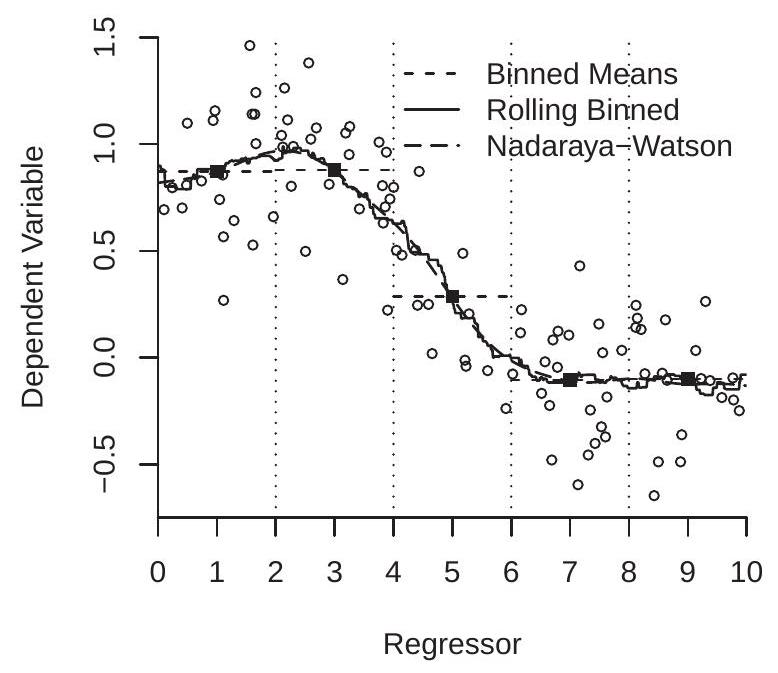
- Nadaraya-Watson
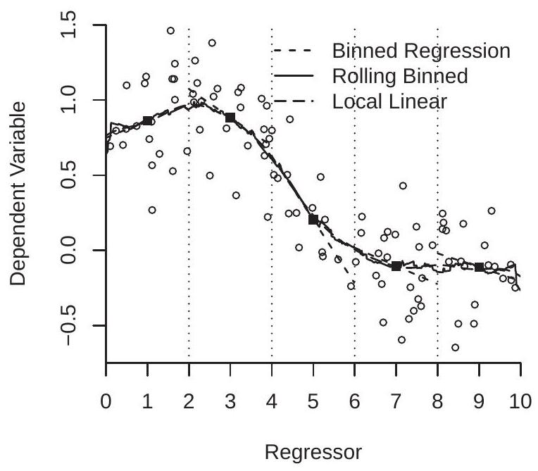
- Local Linear
Figure 19.1: Nadaraya-Watson and Local Linear Regression
To visualize, Figure 19.1(a) displays a scatter plot of 100 random pairs \(\left(Y_{i}, X_{i}\right)\) generated by simulation. The observations are displayed as the open circles. The estimator (19.1) of \(m(x)\) at \(x=1\) with \(h=1\) is the average of the \(Y_{i}\) for the observations such that \(X_{i}\) falls in the interval [ \(\left.0 \leq X_{i} \leq 2\right]\). This estimator is \(\widehat{m}(1)\) and is shown on Figure 19.1(a) by the first solid square. We repeat the calculation (19.1) for \(x=3\), 5,7 , and 9, which is equivalent to partitioning the support of \(X\) into the bins \([0,2]\), [2,4], \([4,6],[6,8]\), and \([8,10]\). These bins are shown in Figure 19.1(a) by the vertical dotted lines and the estimates \((19.1)\) by the five solid squares.
The binned estimator \(\widehat{m}(x)\) is the step function which is constant within each bin and equals the binned mean. In Figure 19.1(a) it is displayed by the horizontal dashed lines which pass through the solid squares. This estimate roughly tracks the central tendency of the scatter of the observations \(\left(Y_{i}, X_{i}\right)\). However, the huge jumps at the edges of the partitions are disconcerting, counter-intuitive, and clearly an artifact of the discrete binning.
If we take another look at the estimation formula (19.1) there is no reason why we need to evaluate (19.1) only on a course grid. We can evaluate \(\widehat{m}(x)\) for any set of values of \(x\). In particular, we can evaluate (19.1) on a fine grid of values of \(x\) and thereby obtain a smoother estimate of the CEF. This estimator is displayed in Figure 19.1(a) with the solid line. We call this estimator “Rolling Binned Means”. This is a generalization of the binned estimator and by construction passes through the solid squares. It turns out that this is a special case of the Nadaraya-Watson estimator considered in the next section. This estimator, while less abrupt than the Binned Means estimator, is still quite jagged.
18.3 Kernel Regression
One deficiency with the estimator (19.1) is that it is a step function in \(x\) even when evaluated on a fine grid. That is why its plot in Figure \(19.1\) is jagged. The source of the discontinuity is that the weights are discontinuous indicator functions. If instead the weights are continuous functions then \(\widehat{m}(x)\) will also be continuous in \(x\). Appropriate weight functions are called kernel functions.
Definition 19.1 A (second-order) kernel function \(K(u)\) satisfies
\(0 \leq K(u) \leq \bar{K}<\infty\)
\(K(u)=K(-u)\),
\(\int_{-\infty}^{\infty} K(u) d u=1\),
\(\int_{-\infty}^{\infty}|u|^{r} K(u) d u<\infty\) for all positive integers \(r\).
Essentially, a kernel function is a bounded probability density function which is symmetric about zero. Assumption 19.1.4 is not essential for most results but is a convenient simplification and does not exclude any kernel function used in standard empirical practice. Some of the mathematical expressions are simplified if we restrict attention to kernels whose variance is normalized to unity.
Definition 19.2 A normalized kernel function satisfies \(\int_{-\infty}^{\infty} u^{2} K(u) d u=1\).
There are a large number of functions which satisfy Definition 19.1, and many are programmed as options in statistical packages. We list the most important in Table \(19.1\) below: the Rectangular, Gaussian, Epanechnikov, Triangular, and Biweight kernels. In practice it is unnecessary to consider kernels beyond these five. For nonparametric regression we recommend either the Gaussian or Epanechnikov kernel, and either will give similar results. In Table \(19.1\) we express the kernels in normalized form.
For more discussion on kernel functions see Chapter 17 of Probability and Statistics for Economists. A generalization of (19.1) is obtained by replacing the indicator function with a kernel function:
\[ \widehat{m}_{\mathrm{nw}}(x)=\frac{\sum_{i=1}^{n} K\left(\frac{X_{i}-x}{h}\right) Y_{i}}{\sum_{i=1}^{n} K\left(\frac{X_{i}-x}{h}\right)} . \]
The estimator (19.2) is known as the Nadaraya-Watson estimator, the kernel regression estimator, or the local constant estimator, and was introduced independently by Nadaraya (1964) and Watson (1964).
The rolling binned means estimator (19.1) is the Nadarya-Watson estimator with the rectangular kernel. The Nadaraya-Watson estimator (19.2) can be used with any standard kernel and is typically estimated using the Gaussian or Epanechnikov kernel. In general we recommend the Gaussian kernel because it produces an estimator \(\widehat{m}_{\mathrm{nw}}(x)\) which possesses derivatives of all orders.
The bandwidth \(h\) plays a similar role in kernel regression as in kernel density estimation. Namely, larger values of \(h\) will result in estimates \(\widehat{m}_{\mathrm{nw}}(x)\) which are smoother in \(x\), and smaller values of \(h\) will result in estimates which are more erratic. It might be helpful to consider the two extreme cases \(h \rightarrow 0\) Table 19.1: Common Normalized Second-Order Kernels
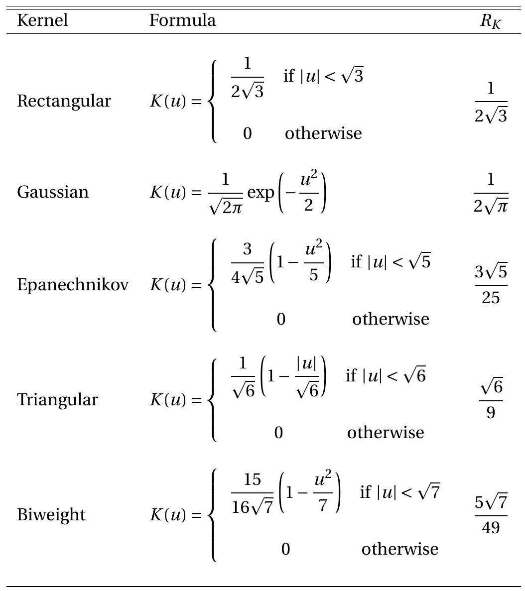
and \(h \rightarrow \infty\). As \(h \rightarrow 0\) we can see that \(\widehat{m}_{\mathrm{nw}}\left(X_{i}\right) \rightarrow Y_{i}\) (if the values of \(X_{i}\) are unique), so that \(\widehat{m}_{\mathrm{nw}}(x)\) is simply the scatter of \(Y_{i}\) on \(X_{i}\). In contrast, as \(h \rightarrow \infty\) then \(\widehat{m}_{\mathrm{nw}}(x) \rightarrow \bar{Y}\), the sample mean. For intermediate values of \(h, \widehat{m}_{\mathrm{nw}}(x)\) will smooth between these two extreme cases.
The estimator (19.2) using the Gaussian kernel and \(h=1 / \sqrt{3}\) is also displayed in Figure 19.1(a) with the long dashes. As you can see, this estimator appears to be much smoother than the binned estimator but tracks exactly the same path. The bandwidth \(h=1 / \sqrt{3}\) for the Gaussian kernel is equivalent to the bandwidth \(h=1\) for the binned estimator because the latter is a kernel estimator using the rectangular kernel scaled to have a standard deviation of \(1 / 3\).
18.4 Local Linear Estimator
The Nadaraya-Watson (NW) estimator is often called a local constant estimator as it locally (about \(x\) ) approximates \(m(x)\) as a constant function. One way to see this is to observe that \(\widehat{m}_{\mathrm{nw}}(x)\) solves the minimization problem
\[ \widehat{m}_{\mathrm{nw}}(x)=\underset{m}{\operatorname{argmin}} \sum_{i=1}^{n} K\left(\frac{X_{i}-x}{h}\right)\left(Y_{i}-m\right)^{2} . \]
This is a weighted regression of \(Y\) on an intercept only.
This means that the NW estimator is making the local approximation \(m(X) \simeq m(x)\) for \(X \simeq x\), which means it is making the approximation
\[ Y=m(X)+e \simeq m(x)+e . \]
The NW estimator is a local estimator of this approximate model using weighted least squares.
This interpretation suggests that we can construct alternative nonparametric estimators of \(m(x)\) by alternative local approximations. Many such local approximations are possible. A popular choice is the Local Linear (LL) approximation. Instead of the approximation \(m(X) \simeq m(x)\), LL uses the linear approximation \(m(X) \simeq m(x)+m^{\prime}(x)(X-x)\). Thus
\[ Y=m(X)+e \simeq m(x)+m^{\prime}(x)(X-x)+e . \]
The LL estimator then applies weighted least squares similarly as in NW estimation.
One way to represent the LL estimator is as the solution to the minimization problem
\[ \left\{\widehat{m}_{\mathrm{LL}}(x), \widehat{m}_{\mathrm{LL}}^{\prime}(x)\right\}=\underset{\alpha, \beta}{\operatorname{argmin}} \sum_{i=1}^{n} K\left(\frac{X_{i}-x}{h}\right)\left(Y_{i}-\alpha-\beta\left(X_{i}-x\right)\right)^{2} . \]
Another is to write the approximating model as
\[ Y \simeq Z(X, x)^{\prime} \beta(x)+e \]
where \(\beta(x)=\left(m(x), m^{\prime}(x)\right)^{\prime}\) and
\[ Z(X, x)=\left(\begin{array}{c} 1 \\ X-x \end{array}\right) . \]
This is a linear regression with regressor vector \(Z_{i}(x)=Z\left(X_{i}, x\right)\) and coefficient vector \(\beta(x)\). Applying weighted least squares with the kernel weights we obtain the LL estimator
\[ \begin{aligned} \widehat{\beta}_{\mathrm{LL}}(x) &=\left(\sum_{i=1}^{n} K\left(\frac{X_{i}-x}{h}\right) Z_{i}(x) Z_{i}(x)^{\prime}\right)^{-1} \sum_{i=1}^{n} K\left(\frac{X_{i}-x}{h}\right) Z_{i}(x) Y_{i} \\ &=\left(\boldsymbol{Z}^{\prime} \boldsymbol{K} \boldsymbol{Z}\right)^{-1} \boldsymbol{Z}^{\prime} \boldsymbol{K} \boldsymbol{Y} \end{aligned} \]
where \(\boldsymbol{K}=\operatorname{diag}\left\{K\left(\left(X_{1}-x\right) / h\right), \ldots, K\left(\left(X_{n}-x\right) / h\right)\right\}, \boldsymbol{Z}\) is the stacked \(Z_{i}(x)^{\prime}\), and \(\boldsymbol{Y}\) is the stacked \(Y_{i}\). This expression generalizes the Nadaraya-Watson estimator as the latter is obtained by setting \(Z_{i}(x)=1\) or constraining \(\beta=0\). Notice that the matrices \(\boldsymbol{Z}\) and \(\boldsymbol{K}\) depend on \(x\) and \(h\).
The local linear estimator was first suggested by Stone (1977) and came into prominence through the work of Fan (1992, 1993).
To visualize, Figure 19.1(b) displays the scatter plot of the same 100 observations from panel (a) divided into the same five bins. A linear regression is fit to the observations in each bin. These five fitted regression lines are displayed by the short dashed lines. This “binned regression estimator” produces a flexible appromation for the CEF but has large jumps at the edges of the partitions. The midpoints of each of these five regression lines are displayed by the solid squares and could be viewed as the target estimate for the binned regression estimator. A rolling version of the binned regression estimator moves these estimation windows continuously across the support of \(X\) and is displayed by the solid line. This corresponds to the local linear estimator with a rectangular kernel and a bandwidth of \(h=1 / \sqrt{3}\). By construction this line passes through the solid squares. To obtain a smoother estimator we replace the rectangular with the Gaussian kernel (using the same bandwidth \(h=1 / \sqrt{3}\) ). We display these estimates with the long dashes. This has the same shape as the rectangular kernel estimate (rolling binned regression) but is visually much smoother. We label this the “Local Linear” estimator because it is the standard implementation. One interesting feature is that as \(h \rightarrow \infty\) the LL estimator approaches the full-sample least squares estimator \(\widehat{m}_{\mathrm{LL}}(x) \rightarrow \widehat{\alpha}+\widehat{\beta} x\). That is because as \(h \rightarrow \infty\) all observations receive equal weight. In this sense the LL estimator is a flexible generalization of the linear OLS estimator.
Another useful property of the LL estimator is that it simultaneously provides estimates of the regression function \(m(x)\) and its slope \(m^{\prime}(x)\) at \(x\).
18.5 Local Polynomial Estimator
The NW and LL estimators are both special cases of the local polynomial estimator. The idea is to approximate the regression function \(m(x)\) by a polynomial of fixed degree \(p\), and then estimate locally using kernel weights.
The approximating model is a \(p^{\text {th }}\) order Taylor series approximation
\[ \begin{aligned} Y &=m(X)+e \\ & \simeq m(x)+m^{\prime}(x)(X-x)+\cdots+m^{(p)}(x) \frac{(X-x)^{p}}{p !}+e \\ &=Z(X, x)^{\prime} \beta(x)+e_{i} \end{aligned} \]
where
\[ Z(X, x)=\left(\begin{array}{c} 1 \\ X-x \\ \vdots \\ \frac{(X-x)^{p}}{p !} \end{array}\right) \quad \beta(x)=\left(\begin{array}{c} m(x) \\ m^{\prime}(x) \\ \vdots \\ m^{(p)}(x) \end{array}\right) \]
The estimator is
\[ \begin{aligned} \widehat{\beta}_{\mathrm{LP}}(x) &=\left(\sum_{i=1}^{n} K\left(\frac{X_{i}-x}{h}\right) Z_{i}(x) Z_{i}(x)^{\prime}\right)^{-1}\left(\sum_{i=1}^{n} K\left(\frac{Y_{i}-x}{h}\right) Z_{i}(x) Y_{i}\right) \\ &=\left(\boldsymbol{Z}^{\prime} \boldsymbol{K} \boldsymbol{Z}\right)^{-1} \boldsymbol{Z}^{\prime} \boldsymbol{K} \boldsymbol{Y} \end{aligned} \]
where \(Z_{i}(x)=Z\left(X_{i}, x\right)\) Notice that this expression includes the Nadaraya-Watson and local linear estimators as special cases with \(p=0\) and \(p=1\), respectively.
There is a trade-off between the polynomial order \(p\) and the local smoothing bandwidth \(h\). By increasing \(p\) we improve the model approximation and thereby can use a larger bandwidth \(h\). On the other hand, increasing \(p\) increases estimation variance.
18.6 Asymptotic Bias
Since \(\mathbb{E}[Y \mid X=x]=m(x)\), the conditional expectation of the Nadaraya-Watson estimator is
\[ \mathbb{E}\left[\widehat{m}_{\mathrm{nw}}(x) \mid \boldsymbol{X}\right]=\frac{\sum_{i=1}^{n} K\left(\frac{X_{i}-x}{h}\right) \mathbb{E}\left[Y_{i} \mid X_{i}\right]}{\sum_{i=1}^{n} K\left(\frac{X_{i}-x}{h}\right)}=\frac{\sum_{i=1}^{n} K\left(\frac{X_{i}-x}{h}\right) m\left(X_{i}\right)}{\sum_{i=1}^{n} K\left(\frac{X_{i}-x}{h}\right)} . \]
We can simplify this expression as \(n \rightarrow \infty\).
The following regularity conditions will be maintained through the chapter. Let \(f(x)\) denote the marginal density of \(X\) and let \(\sigma^{2}(x)=\mathbb{E}\left[e^{2} \mid X=x\right]\) denote the conditional variance of \(e=Y-m(X)\).
Assumption $19.1
\(h \rightarrow 0\).
\(n h \rightarrow \infty\).
\(m(x), f(x)\), and \(\sigma^{2}(x)\) are continuous in some neighborhood \(\mathscr{N}\) of \(x\).
\(f(x)>0\).
These conditions are similar to those used for the asymptotic theory for kernel density estimation. The assumptions \(h \rightarrow 0\) and \(n h \rightarrow \infty\) means that the bandwidth gets small yet the number of observations in the estimation window diverges to infinity. Assumption 19.1.3 are minimal smoothness conditions on the conditional expectation \(m(x)\), marginal density \(f(x)\), and conditional variance \(\sigma^{2}(x)\). Assumption 19.1.4 specifies that the marginal density is non-zero. This is required because we are estimating the conditional expectation at \(x\), so there needs to be a non-trivial number of observations for \(X_{i}\) near \(x\).
Theorem 19.1 Suppose Assumption \(19.1\) holds and \(m^{\prime \prime}(x)\) and \(f^{\prime}(x)\) are continuous in \(\mathscr{N}\). Then as \(n n \rightarrow \infty\) with \(h \rightarrow 0\)
- \(\mathbb{E}\left[\widehat{m}_{\mathrm{nw}}(x) \mid \boldsymbol{X}\right]=m(x)+h^{2} B_{\mathrm{nw}}(x)+o_{p}\left(h^{2}\right)+O_{p}\left(\sqrt{\frac{h}{n}}\right)\)
where
\[ B_{\mathrm{nw}}(x)=\frac{1}{2} m^{\prime \prime}(x)+f(x)^{-1} f^{\prime}(x) m^{\prime}(x) . \]
1. \(\mathbb{E}\left[\widehat{m}_{\mathrm{LL}}(x) \mid \boldsymbol{X}\right]=m(x)+h^{2} B_{\mathrm{LL}}(x)+o_{p}\left(h^{2}\right)+O_{p}\left(\sqrt{\frac{h}{n}}\right)\)
where
\[ B_{\mathrm{LL}}(x)=\frac{1}{2} m^{\prime \prime}(x) . \]
The proof for the Nadaraya-Watson estimator is presented in Section 19.26. For a proof for the local linear estimator see Fan and Gijbels (1996).
We call the terms \(h^{2} B_{\mathrm{nw}}(x)\) and \(h^{2} B_{\mathrm{LL}}(x)\) the asymptotic bias of the estimators.
Theorem 19.1 shows that the asymptotic bias of the Nadaraya-Watson and local linear estimators is proportional to the squared bandwidth \(h^{2}\) (the degree of smoothing) and to the functions \(B_{\mathrm{nw}}(x)\) and \(B_{\mathrm{LL}}(x)\). The asymptotic bias of the local linear estimator depends on the curvature (second derivative) of the CEF function \(m(x)\) similarly to the asymptotic bias of the kernel density estimator in Theorem \(17.1\) of Probability and Statistics for Economists. When \(m^{\prime \prime}(x)<0\) then \(\hat{m}_{\mathrm{LL}}(x)\) is downwards biased. When \(m^{\prime \prime}(x)>0\) then \(\widehat{m}_{\mathrm{LL}}(x)\) is upwards biased. Local averaging smooths \(m(x)\), inducing bias, and this bias is increasing in the level of curvature of \(m(x)\). This is called smoothing bias.
The asymptotic bias of the Nadaraya-Watson estimator adds a second term which depends on the first derivatives of \(m(x)\) and \(f(x)\). This is because the Nadaraya-Watson estimator is a local average. If the density is upward sloped at \(x\) (if \(f^{\prime}(x)>0\) ) then there are (on average) more observations to the right of \(x\) than to the left so a local average will be biased if \(m(x)\) has a non-zero slope. In contrast the bias of the local linear estimator does not depend on the local slope \(m^{\prime}(x)\) because it locally fits a linear regression. The fact that the bias of the local linear estimator has fewer terms than the bias of the Nadaraya-Watson estimator (and is invariant to the slope \(m^{\prime}(x)\) ) justifies the claim that the local linear estimator has generically reduced bias relative to Nadaraya-Watson.
We illustrate asymptotic smoothing bias in Figure 19.2. The solid line is the true CEF for the data displayed in Figure 19.1. The dashed lines are the asymptotic approximations to the expectation \(m(x)+\) \(h^{2} B(x)\) for bandwidths \(h=1 / 2, h=1\), and \(h=3 / 2\). (The asymptotic biases of the NW and LL estimators are the same because \(X\) has a uniform distribution.) You can see that there is minimal bias for the smallest bandwidth but considerable bias for the largest. The dashed lines are smoothed versions of the CEF, attenuating the peaks and valleys.
Smoothing bias is a natural by-product of nonparametric estimation of nonlinear functions. It can only be reduced by using a small bandwidth. As we see in the following section this will result in high estimation variance.
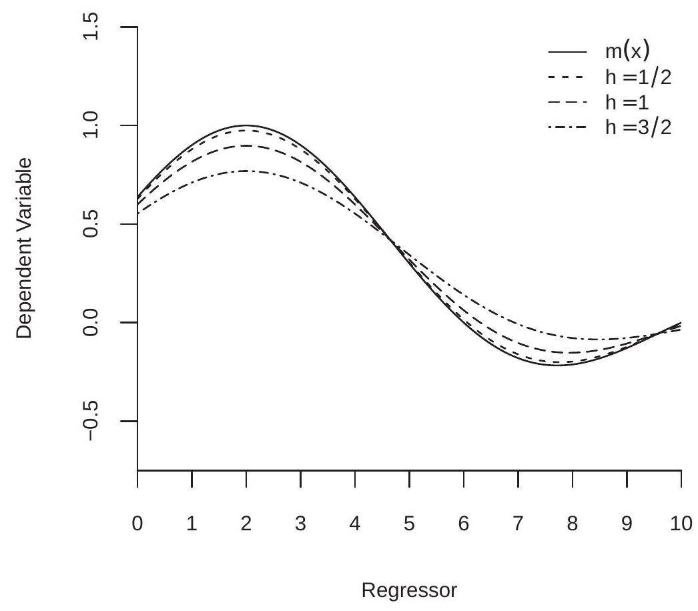
Figure 19.2: Smoothing Bias
18.7 Asymptotic Variance
From (19.3) we deduce that
\[ \widehat{m}_{\mathrm{nw}}(x)-\mathbb{E}\left[\widehat{m}_{\mathrm{nw}}(x) \mid \boldsymbol{X}\right]=\frac{\sum_{i=1}^{n} K\left(\frac{X_{i}-x}{h}\right) e_{i}}{\sum_{i=1}^{n} K\left(\frac{X_{i}-x}{h}\right)} . \]
Since the denominator is a function only of \(X_{i}\) and the numerator is linear in \(e_{i}\) we can calculate that the finite sample variance of \(\widehat{m}_{\mathrm{nw}}(x)\) is
\[ \operatorname{var}\left[\widehat{m}_{\mathrm{nw}}(x) \mid \boldsymbol{X}\right]=\frac{\sum_{i=1}^{n} K\left(\frac{X_{i}-x}{h}\right)^{2} \sigma^{2}\left(X_{i}\right)}{\left(\sum_{i=1}^{n} K\left(\frac{X_{i}-x}{h}\right)\right)^{2}} . \]
We can simplify this expression as \(n \rightarrow \infty\). Let \(\sigma^{2}(x)=\mathbb{E}\left[e^{2} \mid X=x\right]\) denote the conditional variance of \(e=Y-m(X)\).
Theorem 19.2 Under Assumption 19.1,
\(\operatorname{var}\left[\widehat{m}_{\mathrm{nw}}(x) \mid \boldsymbol{X}\right]=\frac{R_{K} \sigma^{2}(x)}{f(x) n h}+o_{p}\left(\frac{1}{n h}\right)\).
\(\operatorname{var}\left[\hat{m}_{\mathrm{LL}}(x) \mid \boldsymbol{X}\right]=\frac{R_{K} \sigma^{2}(x)}{f(x) n h}+o_{p}\left(\frac{1}{n h}\right)\).
In these expressions
\[ R_{K}=\int_{-\infty}^{\infty} K(u)^{2} d u \]
is the roughness of the kernel \(K(u)\).
The proof for the Nadaraya-Watson estimator is presented in Section 19.26. For the local linear estimator see Fan and Gijbels (1996).
We call the leading terms in Theorem \(19.2\) the asymptotic variance of the estimators. Theorem \(19.2\) shows that the asymptotic variance of the two estimators are identical. The asymptotic variance is proportional to the roughness \(R_{K}\) of the kernel \(K(u)\) and to the conditional variance \(\sigma^{2}(x)\) of the regression error. It is inversely proportional to the effective number of observations \(n h\) and to the marginal density \(f(x)\). This expression reflects the fact that the estimators are local estimators. The precision of \(\widehat{m}(x)\) is low for regions where \(e\) has a large conditional variance and/or \(X\) has a low density (where there are relatively few observations).
18.8 AIMSE
We define the asymptotic MSE (AMSE) of an estimator \(\widehat{m}(x)\) as the sum of its squared asymptotic bias and asymptotic variance. Using Theorems \(19.1\) and \(19.2\) for the Nadaraya-Watson and local linear estimators, we obtain
\[ \operatorname{AMSE}(x) \stackrel{\text { def }}{=} h^{4} B(x)^{2}+\frac{R_{K} \sigma^{2}(x)}{n h f(x)} \]
where \(B(x)=B_{\mathrm{nw}}(x)\) for the Nadaraya-Watson estimator and \(B(x)=B_{\mathrm{LL}}(x)\) for the local linear estimator. This is the asymptotic MSE for the estimator \(\widehat{m}(x)\) for a single point \(x\).
A global measure of fit can be obtained by integrating AMSE \((x)\). It is standard to weight the AMSE by \(f(x) w(x)\) for some integrable weight function \(w(x)\). This is called the asymptotic integrated MSE (AIMSE). Let \(S\) be the support of \(X\) (the region where \(f(x)>0\) ).
\[ \operatorname{AIMSE} \stackrel{\text { def }}{=} \int_{S} \operatorname{AMSE}(x) f(x) w(x) d x=\int_{S}\left(h^{4} B(x)^{2}+\frac{R_{K} \sigma^{2}(x)}{n h f(x)}\right) f(x) w(x) d x=h^{4} \bar{B}+\frac{R_{K}}{n h} \bar{\sigma}^{2} \]
where
\[ \begin{aligned} \bar{B} &=\int_{S} B(x)^{2} f(x) w(x) d x \\ \bar{\sigma}^{2} &=\int_{S} \sigma^{2}(x) w(x) d x . \end{aligned} \]
The weight function \(w(x)\) can be omitted if \(S\) is bounded. Otherwise, a common choice is \(w(x)=\) \(\mathbb{1}\left\{\xi_{1} \leq x \leq \xi_{2}\right\}\). An integrable weight function is needed when \(X\) has unbounded support to ensure that \(\bar{\sigma}^{2}<\infty\)
The form of the AIMSE is similar to that for kernel density estimation (Theorem \(17.3\) of Probability and Statistics for Economists). It has two terms (squared bias and variance). The first is increasing in the bandwidth \(h\) and the second is decreasing in \(h\). Thus the choice of \(h\) affects AIMSE with a trade-off between these two components. Similarly to density estimation we can calculate the bandwidth which minimizes the AIMSE. (See Exercise 19.2.) The solution is given in the following theorem.
Theorem 19.3 The bandwidth which minimizes the AIMSE (19.5) is
\[ h_{0}=\left(\frac{R_{K} \bar{\sigma}^{2}}{4 \bar{B}}\right)^{1 / 5} n^{-1 / 5} . \]
With \(h \sim n^{-1 / 5}\) then AIMSE \([\widehat{m}(x)]=O\left(n^{-4 / 5}\right)\).
This result characterizes the AIMSE-optimal bandwidth. This bandwidth satisfies the rate \(h=\mathrm{cn}^{-1 / 5}\) which is the same rate as for kernel density estimation. The optimal constant \(c\) depends on the kernel \(K(x)\), the weighted average squared bias \(\bar{B}\), and the weighted average variance \(\bar{\sigma}^{2}\). The constant \(c\) is different, however, from that for density estimation.
Inserting (19.6) into (19.5) plus some algebra we find that the AIMSE using the optimal bandwidth is
\[ \operatorname{AIMSE}_{0} \simeq 1.65\left(R_{K}^{4} \bar{B} \bar{\sigma}^{8}\right)^{1 / 5} n^{-4 / 5} . \]
This depends on the kernel \(K(u)\) only through the constant \(R_{K}\). Since the Epanechnikov kernel has the smallest value \({ }^{1}\) of \(R_{K}\) it is also the kernel which produces the smallest AIMSE. This is true for both the NW and LL estimators.
\({ }^{1}\) See Theorem \(17.4\) of Probability and Statistics for Economists. Theorem 19.4 The AIMSE (19.5) of the Nadaraya-Watson and Local Linear regression estimators is minimized by the Epanechnikov kernel.
The efficiency loss by using the other standard kernels, however, is small. The relative efficiency \({ }^{2}\) of estimation using the another kernel is \(\left(R_{K} / R_{K} \text { (Epanechnikov) }\right)^{2 / 5}\). Using the values of \(R_{K}\) from Table \(19.1\) we calculate that the efficiency loss from using the Triangle, Gaussian, and Rectangular kernels are \(1 %, 2 %\), and \(3 %\), respectively, which are minimal. Since the Gaussian kernel produces the smoothest estimates, which is important for estimation of marginal effects, our overall recommendation is the Gaussian kernel.
18.9 Reference Bandwidth
The NW, LL and LP estimators depend on a bandwidth and without an empirical rule for selection of \(h\) the methods are incomplete. It is useful to have a reference bandwith which mimics the optimal bandwidth in a simplified setting and provides a baseline for further investigations.
Theorem \(19.3\) and a little re-writing reveals that the optimal bandwidth equals
\[ h_{0}=\left(\frac{R_{K}}{4}\right)^{1 / 5}\left(\frac{\bar{\sigma}^{2}}{n \bar{B}}\right)^{1 / 5} \simeq 0.58\left(\frac{\bar{\sigma}^{2}}{n \bar{B}}\right)^{1 / 5} \]
where the approximation holds for all single-peaked kernels by similar calculations \({ }^{3}\) as in Section \(17.9\) of Probability and Statistics for Economists.
A reference approach can be used to develop a rule-of-thumb for regression estimation. In particular, Fan and Gijbels (1996, Section 4.2) develop what they call the ROT (rule of thumb) bandwidth for the local linear estimator. We now describe their derivation.
First, set \(w(x)=\mathbb{1}\left\{\xi_{1} \leq x \leq \xi_{2}\right\}\). Second, form a pilot or preliminary estimator of the regression function \(m(x)\) using a \(q^{t h}\)-order polynomial regression
\[ m(x)=\beta_{0}+\beta_{1} x+\beta_{2} x^{2}+\cdots+\beta_{q} x^{q} \]
for \(q \geq 2\). (Fan and Gijbels (1996) suggest \(q=4\) but this is not essential.) By least squares we obtain the coefficient estimates \(\widehat{\beta}_{0}, \ldots, \widehat{\beta}_{\underline{q}}\) and implied second derivative \(\widehat{m}^{\prime \prime}(x)=2 \widehat{\beta}_{2}+6 \widehat{\beta}_{3} x+12 \widehat{\beta}_{4} x^{2}+\cdots+q(q-\) 1) \(\widehat{\beta}_{q} x^{q-2}\). Third, notice that \(\frac{q}{B}\) can be written as an expectation
\[ \bar{B}=\mathbb{E}\left[B(X)^{2} w(X)\right]=\mathbb{E}\left[\left(\frac{1}{2} m^{\prime \prime}(X)\right)^{2} \mathbb{1}\left\{\xi_{1} \leq X \leq \xi_{2}\right\}\right] . \]
A moment estimator is
\[ \widehat{B}=\frac{1}{n} \sum_{i=1}^{n}\left(\frac{1}{2} \widehat{m}^{\prime \prime}\left(X_{i}\right)\right)^{2} \mathbb{1}\left\{\xi_{1} \leq X_{i} \leq \xi_{2}\right\} . \]
Fourth, assume that the regression error is homoskedastic \(\mathbb{E}\left[e^{2} \mid X\right]=\sigma^{2}\) so that \(\bar{\sigma}^{2}=\sigma^{2}\left(\xi_{2}-\xi_{1}\right)\). Estimate \(\sigma^{2}\) by the error variance estimate \(\widehat{\sigma}^{2}\) from the preliminary regression. Plugging these into (19.7) we obtain the reference bandwidth
\[ h_{\mathrm{rot}}=0.58\left(\frac{\widehat{\sigma}^{2}\left(\xi_{2}-\xi_{1}\right)}{n \widehat{B}}\right)^{1 / 5} . \]
\({ }^{2}\) Measured by root AIMSE.
\({ }^{3}\) The constant \(\left(R_{K} / 4\right)^{1 / 5}\) is bounded between \(0.58\) and \(0.59\). Fan and Gijbels (1996) call this the Rule-of-Thumb (ROT) bandwidth.
Fan and Gijbels developed similar rules for higher-order odd local polynomial estimators but not for the local constant (Nadaraya-Watson) estimator. However, we can derive a ROT for the NW as well by using a reference model for the marginal density \(f(x)\). A convenient choice is the uniform density under which \(f^{\prime}(x)=0\) and the optimal bandwidths for NW and LL coincide. This motivates using (19.9) as a ROT bandwidth for both the LL and NW estimators.
As we mentioned above, Fan and Gijbels suggest using a \(4^{t h}\)-order polynomial for the pilot estimator but this specific choice is not essential. In applications it may be prudent to assess sensitivity of the ROT bandwith to the choice of \(q\) and to examine the estimated pilot regression for precision of the estimated higher-order polynomial terms.
We now comment on the choice of the weight region \(\left[\xi_{1}, \xi_{2}\right]\). When \(X\) has bounded support then \(\left[\xi_{1}, \xi_{2}\right]\) can be set equal to this support. Otherwise, \(\left[\xi_{1}, \xi_{2}\right]\) can be set equal to the region of interest for \(\widehat{m}(x)\), or the endpoints can be set to equal fixed quantiles (e.g. \(0.05\) and \(0.95\) ) of the distribution of \(X\).
To illustrate, take the data shown in Figure 19.1. If we fit a \(4^{\text {th }}\) order polynomial we find \(\widehat{m}(x)=\) \(.49+.70 x-.28 x^{2}-.033 x^{3}-.0012 x^{4}\) which implies \(\widehat{m}^{\prime \prime}(x)=-.56-.20 x-.014 x^{2}\). Setting \(\left[\xi_{1}, \xi_{2}\right]=[0,10]\) from the support of \(X\) we find \(\widehat{B}=0.00889\). The residuals from the polynomial regression have variance \(\widehat{\sigma}^{2}=0.0687\). Plugging these into (19.9) we find \(h_{\mathrm{rot}}=0.551\) which is similar that used in Figure 19.1.
18.10 Estimation at a Boundary
One advantage of the local linear over the Nadaraya-Watson estimator is that the LL has better performance at the boundary of the support of \(X\). The NW estimator has excessive smoothing bias near the boundaries. In many contexts in econometrics the boundaries are of great interest. In such cases it is strongly recommended to use the local linear estimator (or a local polynomial estimator with \(p \geq 1\) ).
To understand the problem it may be helpful to examine Figure 19.3. This shows a scatter plot of 100 observations generated as \(X \sim U[0,10]\) and \(Y \sim \mathrm{N}(X, 1)\) so that \(m(x)=x\). Suppose we are interested in the CEF \(m(0)\) at the lower boundary \(x=0\). The Nadaraya-Watson estimator equals a weighted average of the \(Y\) observations for small values of \(|X|\). Since \(X \geq 0\), these are all observations for which \(m(X) \geq m(0)\), and therefore \(\hat{m}_{\mathrm{nw}}(0)\) is biased upwards. Symmetrically, the Nadaraya-Watson estimator at the upper boundary \(x=10\) is a weighted average of observations for which \(m(X) \leq m(10)\) and therefore \(\widehat{m}_{\mathrm{nw}}(10)\) is biased downwards.
In contrast, the local linear estimators \(\widehat{m}_{\mathrm{LL}}(0)\) and \(\widehat{m}_{\mathrm{LL}}(10)\) are unbiased in this example because \(m(x)\) is linear in \(x\). The local linear estimator fits a linear regression line. Since the expectation is correctly specified there is no estimation bias.
The exact bias \({ }^{4}\) of the NW estimator is shown in Figure \(19.3\) by the dashed lines. The long dashes is the expectation \(\mathbb{E}\left[\widehat{m}_{\mathrm{nw}}(x)\right]\) for \(h=1\) and the short dashes is the expectation \(\mathbb{E}\left[\widehat{m}_{\mathrm{nw}}(x)\right]\) for \(h=2\). We can see that the bias is substantial. For \(h=2\) the bias is visible for all values of \(x\). For the smaller bandwidth \(h=1\) the bias is minimal for \(x\) in the central range of the support, but is still quite substantial for \(x\) near the boundaries.
To calculate the asymptotic smoothing bias we can revisit the proof of Theorem 19.1.1 which calculated the asymptotic bias at interior points. Equation (19.29) calculates the bias of the numerator of the estimator expressed as an integral over the marginal density. Evaluated at a lower boundary the density is positive only for \(u \geq 0\) so the integral is over the positive region \([0, \infty)\). This applies as well to equation (19.31) and the equations which follow. In this case the leading term of this expansion is the first term (19.32) which is proportional to \(h\) rather than \(h^{2}\). Completing the calculations we find the following. Define \(m(x+)=\lim _{z \downarrow x} m(z)\) and \(m(x-)=\lim _{z \uparrow x} m(z)\).
\({ }^{4}\) Calculated by simulation from 10,000 simulation replications.
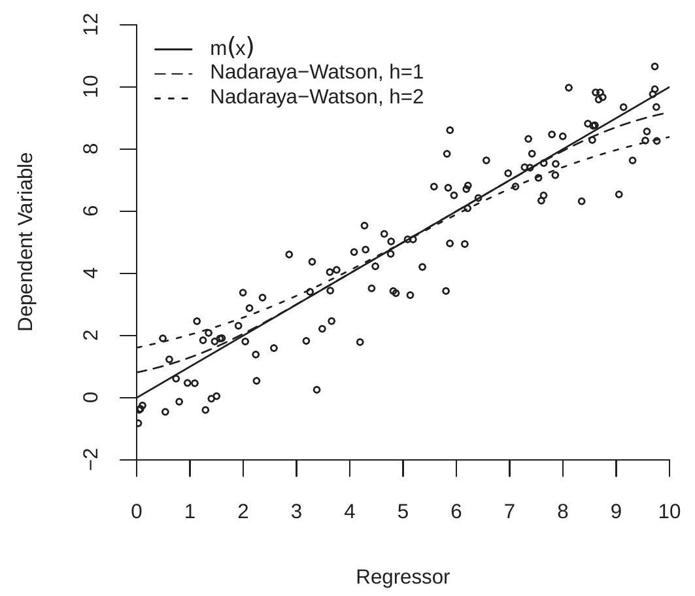
Figure 19.3: Boundary Bias
Theorem 19.5 Suppose Assumption \(19.1\) holds. Set \(\mu_{K}=2 \int_{0}^{\infty} K(u) d u\). Let the support of \(X\) be \(S=[\underline{x}, \bar{x}]\).
If \(m^{\prime \prime}(\underline{x}+), \sigma^{2}(\underline{x}+)\) and \(f^{\prime}(\underline{x}+)\) exist, and \(f(\underline{x}+)>0\) then
\[ \mathbb{E}\left[\hat{m}_{\mathrm{nw}}(\underline{x}) \mid \boldsymbol{X}\right]=m(\underline{x})+h m^{\prime}(\underline{x}) \mu_{K}+o_{p}(h)+O_{p}\left(\sqrt{\frac{h}{n}}\right) . \]
If \(m^{\prime \prime}(\bar{x}-), \sigma^{2}(\bar{x}-)\) and \(f^{\prime}(\bar{x}-)\) exist, and \(f(\bar{x}-)>0\) then
\[ \mathbb{E}\left[\widehat{m}_{\mathrm{nw}}(\bar{x}) \mid \boldsymbol{X}\right]=m(\bar{x})-h m^{\prime}(\bar{x}) \mu_{K}+o_{p}(h)+O_{p}\left(\sqrt{\frac{h}{n}}\right) . \]
Theorem \(19.5\) shows that the asymptotic bias of the NW estimator at the boundary is \(O(h)\) and depends on the slope of \(m(x)\) at the boundary. When the slope is positive the NW estimator is upward biased at the lower boundary and downward biased at the upper boundary. The standard interpretation of Theorem \(19.5\) is that the NW estimator has high bias near boundary points.
Similarly we can evaluate the performance of the LL estimator. We summarize the results without derivation (as they are more technically challenging) and instead refer interested readers to Cheng, Fan and Marron (1997) and Imbens and Kalyahnaraman (2012).
Define the kernel moments \(v_{j}=\int_{0}^{\infty} u^{j} K(u) d u, \pi_{j}=\int_{0}^{\infty} u^{j} K(u)^{2} d u\), and projected kernel
\[ K^{*}(u)=\left[\begin{array}{ll} 1 & 0 \end{array}\right]\left[\begin{array}{ll} v_{0} & v_{1} \\ v_{1} & v_{2} \end{array}\right]^{-1}\left[\begin{array}{c} 1 \\ u \end{array}\right] K(u)=\frac{v_{2}-v_{1} u}{v_{0} v_{2}-v_{1}^{2}} K(u) . \]
Define its second moment
\[ \sigma_{K^{*}}^{2}=\int_{0}^{\infty} u^{2} K^{*}(u) d u=\frac{v_{2}^{2}-v_{1} v_{3}}{v_{0} v_{2}-v_{1}^{2}} \]
and roughness
\[ R_{K}^{*}=\int_{0}^{\infty} K^{*}(u)^{2} d u=\frac{v_{2}^{2} \pi_{0}-2 v_{1} v_{2} \pi_{1}+v_{1}^{2} \pi_{2}}{\left(v_{0} v_{2}-v_{1}^{2}\right)^{2}} \]
Theorem 19.6 Under the assumptions of Theorem 19.5, at a boundary point \(\underline{x}\)
\(\mathbb{E}\left[\hat{m}_{\mathrm{LL}}(\underline{x}) \mid \boldsymbol{X}\right]=m(\underline{x})+\frac{h^{2} m^{\prime \prime}(\underline{x}) \sigma_{K^{*}}^{2}}{2}+o_{p}\left(h^{2}\right)+O_{p}\left(\sqrt{\frac{h}{n}}\right)\)
\(\operatorname{var}\left[\widehat{m}_{\mathrm{LL}}(\underline{x}) \mid \boldsymbol{X}\right]=\frac{R_{K}^{*} \sigma^{2}(\underline{x})}{f(\underline{x}) n h}+o_{p}\left(\frac{1}{n h}\right)\)
Theorem 19.6 shows that the asymptotic bias of the LL estimator at a boundary is \(O\left(h^{2}\right.\) ), the same as at interior points and is invariant to the slope of \(m(x)\). The theorem also shows that the asymptotic variance has the same rate as at interior points.
Taking Theorems 19.1, 19.2, 19.5, and \(19.6\) together we conclude that the local linear estimator has superior asymptotic properties relative to the NW estimator. At interior points the two estimators have the same asymptotic variance. The bias of the LL estimator is invariant to the slope of \(m(x)\) and its asymptotic bias only depends on the second derivative while the bias of the NW estimator depends on both the first and second derivatives. At boundary points the asymptotic bias of the NW estimator is \(O(h)\) which is of higher order than the \(O\left(h^{2}\right)\) bias of the LL estimator. For these reasons we recommend the local linear estimator over the Nadaraya-Watson estimator. A similar argument can be made to recommend the local cubic estimator, but this is not widely used.
The asymptotic bias and variance of the LL estimator at the boundary is slightly different than in the interior. The difference is that the bias and variance depend on the moments of the kernel-like function \(K^{*}(u)\) rather than the original kernel \(K(u)\).
An interesting question is to find the optimal kernel function for boundary estimation. By the same calculations as for Theorem \(19.4\) we find that the optimal kernel \(K^{*}(u)\) minimizes the roughness \(R_{K}^{*}\) given the second moment \(\sigma_{K^{*}}^{2}\) and as argued for Theorem \(19.4\) this is achieved when \(K^{*}(u)\) equals a quadratic function in \(u\). Since \(K^{*}(u)\) is the product of \(K(u)\) and a linear function this means that \(K(u)\) must be linear in \(|u|\), implying that the optimal kernel \(K(u)\) is the Triangular kernel. See Cheng, Fan, and Marron (1997). Calculations similar to those following Theorem \(19.4\) show that efficiency loss \({ }^{5}\) of estimation using the Epanechnikov, Gaussian, and Rectangular kernels are 1%, 1%, and 3%, respectively.
\({ }^{5}\) Measured by root AIMSE.
18.11 Nonparametric Residuals and Prediction Errors
Given any nonparametric regression estimator \(\widehat{m}(x)\) the fitted regression at \(x=X_{i}\) is \(\widehat{m}\left(X_{i}\right)\) and the fitted residual is \(\widehat{e}_{i}=Y_{i}-\widehat{m}\left(X_{i}\right)\). As a general rule, but especially when the bandwidth \(h\) is small, it is hard to view \(\widehat{e}_{i}\) as a good measure of the fit of the regression. For the NW and LL estimators, as \(h \rightarrow 0\) then \(\widehat{m}\left(X_{i}\right) \rightarrow Y_{i}\) and therefore \(\widehat{e}_{i} \rightarrow 0\). This is clear overfitting as the true error \(e_{i}\) is not zero. In general, because \(\widehat{m}\left(X_{i}\right)\) is a local average which includes \(Y_{i}\), the fitted value will be necessarily close to \(Y_{i}\) and the residual \(\widehat{e}_{i}\) small, and the degree of this overfitting increases as \(h\) decreases.
A standard solution is to measure the fit of the regression at \(x=X_{i}\) by re-estimating the model excluding the \(i^{t h}\) observation. Let \(\widetilde{m}_{-i}(x)\) be the leave-one-out nonparametric estimator computed without observation \(i\). For example, for Nadaraya-Watson regression, this is
\[ \widetilde{Y}_{i}=\widetilde{m}_{-i}(x)=\frac{\sum_{j \neq i} K\left(\frac{X_{j}-x}{h}\right) Y_{j}}{\sum_{j \neq i} K\left(\frac{X_{j}-x}{h}\right)} . \]
Notationally, the “-i” subscript is used to indicate that the \(i^{t h}\) observation is omitted.
The leave-one-out predicted value for \(Y_{i}\) at \(x=X_{i}\) is \(\widetilde{Y}_{i}=\widetilde{m}_{-i}\left(X_{i}\right)\) and the leave-one-out prediction error is
\[ \widetilde{e}_{i}=Y_{i}-\widetilde{Y}_{i} . \]
Since \(\widetilde{Y}_{i}\) is not a function of \(Y_{i}\) there is no tendency for \(\widetilde{Y}_{i}\) to overfit for small \(h\). Consequently, \(\widetilde{e}_{i}\) is a good measure of the fit of the estimated nonparametric regression.
When possible the leave-one-out prediction errors should be used instead of the residuals \(\widehat{e}_{i}\).
18.12 Cross-Validation Bandwidth Selection
The most popular method in applied statistics to select bandwidths is cross-validation. The general idea is to estimate the model fit based on leave-one-out estimation. Here we describe the method as typically applied for regression estimation. The method applies to NW, LL, and LP estimation, as well as other nonparametric estimators.
To be explicit about the dependence of the estimator on the bandwidth let us write an estimator of \(m(x)\) with a given bandwidth \(h\) as \(\widehat{m}(x, h)\).
Ideally, we would like to select \(h\) to minimize the integrated mean-squared error (IMSE) of \(\widehat{m}(x, h)\) as a estimator of \(m(x)\) :
\[ \operatorname{IMSE}_{n}(h)=\int_{S} \mathbb{E}\left[(\widehat{m}(x, h)-m(x))^{2}\right] f(x) w(x) d x \]
where \(f(x)\) is the marginal density of \(X\) and \(w(x)\) is an integrable weight function. The weight \(w(x)\) is the same as used in (19.5) and can be omitted when \(X\) has bounded support.
The difference \(\widehat{m}(x, h)-m(x)\) at \(x=X_{i}\) can be estimated by the leave-one-out prediction errors \((19.10)\)
\[ \widetilde{e}_{i}(h)=Y_{i}-\widetilde{m}_{-i}\left(X_{i}, h\right) \]
where we are being explicit about the dependence on the bandwidth \(h\). A reasonable estimator of IMSE \({ }_{n}(h)\) is the weighted average mean squared prediction errors
\[ \mathrm{CV}(h)=\frac{1}{n} \sum_{i=1}^{n} \widetilde{e}_{i}(h)^{2} w\left(X_{i}\right) . \]
This function of \(h\) is known as the cross-validation criterion. Once again, if \(X\) has bounded support then the weights \(w\left(X_{i}\right)\) can be omitted and this is typically done in practice.
It turns out that the cross-validation criterion is an unbiased estimator of the IMSE plus a constant for a sample with \(n-1\) observations.
Theorem $19.7
\[ \mathbb{E}[\mathrm{CV}(h)]=\bar{\sigma}^{2}+\operatorname{IMSE}_{n-1}(h) \]
where \(\bar{\sigma}^{2}=\mathbb{E}\left[e^{2} w(X)\right]\)
The proof of Theorem \(19.7\) is presented in Section 19.26.
Since \(\bar{\sigma}^{2}\) is a constant independent of the bandwidth \(h, \mathbb{E}[\mathrm{CV}(h)]\) is a shifted version of \(\operatorname{IMSE}_{n-1}(h)\). In particular, the \(h\) which minimizes \(\mathbb{E}[\mathrm{CV}(h)]\) and \(\operatorname{IMSE}_{n-1}(h)\) are identical. When \(n\) is large the bandwidth which minimizes \(\operatorname{IMSE}_{n-1}(h)\) and \(\operatorname{IMSE}_{n}(h)\) are nearly identical so \(\mathrm{CV}(h)\) is essentially unbiased as an estimator of \(\operatorname{IMSE}_{n}(h)+\bar{\sigma}^{2}\). This considerations lead to the recommendation to select \(h\) as the value which minimizes \(\mathrm{CV}(h)\).
The cross-validation bandwidth \(h_{\mathrm{cv}}\) is the value which minimizes \(\mathrm{CV}(h)\)
\[ h_{\mathrm{cv}}=\underset{h \geq h_{\ell}}{\operatorname{argmin}} \mathrm{CV}(h) \]
for some \(h_{\ell}>0\). The restriction \(h \geq h_{\ell}\) can be imposed so that \(\mathrm{CV}(h)\) is not evaluated over unreasonably small bandwidths.
There is not an explicit solution to the minimization problem (19.13), so it must be solved numerically. One method is grid search. Create a grid of values for \(h\), e.g. [ \(\left.h_{1}, h_{2}, \ldots, h_{J}\right]\), evaluate \(C V\left(h_{j}\right)\) for \(j=1, \ldots, J\), and set
\[ h_{\mathrm{cv}}=\underset{h \in\left[h_{1}, h_{2}, \ldots, h_{J}\right]}{\operatorname{argmin}} \mathrm{CV}(h) . \]
Evaluation using a coarse grid is typically sufficient for practical application. Plots of CV( \(h)\) against \(h\) are a useful diagnostic tool to verify that the minimum of \(\mathrm{CV}(h)\) has been obtained. A computationally more efficient method for obtaining the solution (19.13) is Golden-Section Search. See Section \(12.4\) of Probability and Statistics for Economists.
It is possible for the solution (19.13) to be unbounded, that is, \(\mathrm{CV}(h)\) is decreasing for large \(h\) so that \(h_{\mathrm{cv}}=\infty\). This is okay. It simply means that the regression estimator simplifies to its full-sample version. For Nadaraya-Watson estimator this is \(\hat{m}_{\mathrm{nw}}(x)=\bar{Y}\). For the local linear estimator this is \(\hat{m}_{\mathrm{LL}}(x)=\widehat{\alpha}+\widehat{\beta} x\).
For NW and LL estimation, the criterion (19.11) requires leave-one-out estimation of the conditional mean at each observation \(X_{i}\). This is different from calculation of the estimator \(\widehat{m}(x)\) as the latter is typically done at a set of fixed values of \(x\) for purposes of display.
To illustrate, Figure 19.4(a) displays the cross-validation criteria \(\mathrm{CV}(h)\) for the Nadaraya-Watson and Local Linear estimators using the data from Figure 19.1, both using the Gaussian kernel. The CV functions are computed on a grid on \(\left[h_{\mathrm{rot}} / 3,3 h_{\mathrm{rot}}\right]\) with 200 gridpoints. The CV-minimizing bandwidths are \(h_{\mathrm{nw}}=0.830\) for the Nadaraya-Watson estimator and \(h_{\mathrm{LL}}=0.764\) for the local linear estimator. These are somewhat higher than the rule of thumb \(h_{\mathrm{rot}}=0.551\) value calculated earlier. Figure 19.4(a) shows the minimizing bandwidths by the arrows.
The CV criterion can also be used to select between different nonparametric estimators. The CVselected estimator is the one with the lowest minimized CV criterion. For example, in Figure 19.4(a), you can see that the LL estimator has a minimized CV criterion of \(0.0699\) which is lower than the minimum
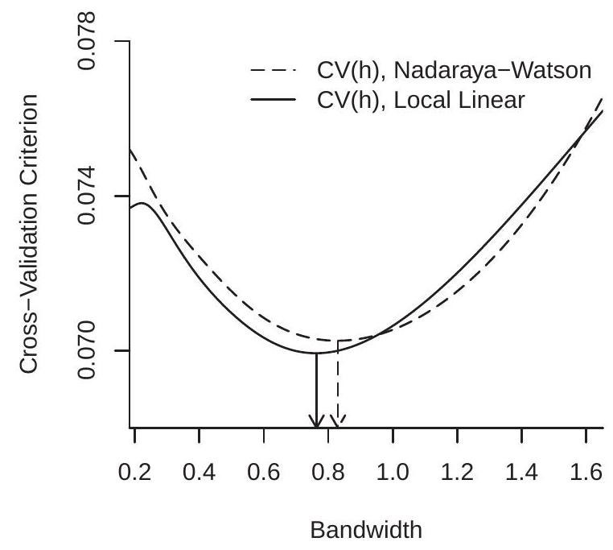
- Cross-Validation Criterion
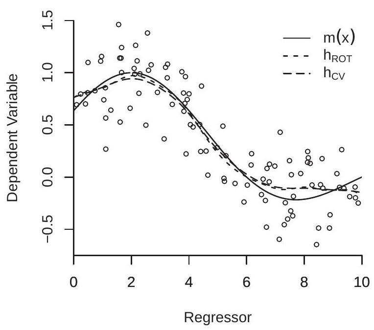
- Nonparametric Estimates
Figure 19.4: Bandwidth Selection
\(0.0703\) obtained by the NW estimator. Since the LL estimator achieves a lower value of the CV criterion, LL is the CV-selected estimator. The difference, however, is small, indicating that the two estimators achieve similar IMSE.
Figure 19.4(b) displays the local linear estimates \(\widehat{m}(x)\) using the ROT and CV bandwidths along with the true conditional mean \(m(x)\). The estimators track the true function quite well, and the difference between the bandwidths is relatively minor in this application.
18.13 Asymptotic Distribution
We first provide a consistency result.
Theorem 19.8 Under Assumption 19.1, \(\hat{m}_{\mathrm{nw}}(x) \underset{p}{\rightarrow} m(x)\) and \(\hat{m}_{\mathrm{LL}}(x) \underset{p}{\longrightarrow}\) \(m(x)\)
A proof for the Nadaraya-Watson estimator is presented in Section 19.26. For the local linear estimator see Fan and Gijbels (1996).
Theorem \(19.8\) shows that the estimators are consistent for \(m(x)\) under mild continuity assumptions. In particular, no smoothness conditions on \(m(x)\) are required beyond continuity.
We next present an asymptotic distribution result. The following shows that the kernel regression estimators are asymptotically normal with a nonparametric rate of convergence, a non-trivial asymptotic bias, and a non-degenerate asymptotic variance. Theorem 19.9 Suppose Assumption \(19.1\) holds. Assume in addition that \(m^{\prime \prime}(x)\) and \(f^{\prime}(x)\) are continuous in \(\mathscr{N}\), that for some \(r>2\) and \(x \in \mathscr{N}\),
\[ \mathbb{E}\left[|e|^{r} \mid X=x\right] \leq \bar{\sigma}<\infty, \]
and
\[ n h^{5}=O(1) . \]
Then
\[ \sqrt{n h}\left(\widehat{m}_{\mathrm{nw}}(x)-m(x)-h^{2} B_{\mathrm{nw}}(x)\right) \underset{d}{\longrightarrow} \mathrm{N}\left(0, \frac{R_{K} \sigma^{2}(x)}{f(x)}\right) . \]
Similarly,
\[ \sqrt{n h}\left(\widehat{m}_{\mathrm{LL}}(x)-m(x)-h^{2} B_{\mathrm{LL}}(x)\right) \underset{d}{\longrightarrow} \mathrm{N}\left(0, \frac{R_{K} \sigma^{2}(x)}{f(x)}\right) . \]
A proof for the Nadaraya-Watson estimator appears in Section 19.26. For the local linear estimator see Fan and Gijbels (1996).
Relative to Theorem 19.8, Theorem \(19.9\) requires stronger smoothness conditions on the conditional mean and marginal density. There are also two technical regularity conditions. The first is a conditional moment bound (19.14) (which is used to verify the Lindeberg condition for the CLT) and the second is the bandwidth bound \(n h^{5}=O(1)\). The latter means that the bandwidth must decline to zero at least at the rate \(n^{-1 / 5}\) and is used \({ }^{6}\) to ensure that higher-order bias terms do not enter the asymptotic distribution (19.16).
There are several interesting features about the asymptotic distribution which are noticeably different than for parametric estimators. First, the estimators converge at the rate \(\sqrt{n h}\) not \(\sqrt{n}\). Since \(h \rightarrow 0\), \(\sqrt{n h}\) diverges slower than \(\sqrt{n}\), thus the nonparametric estimators converge more slowly than a parametric estimator. Second, the asymptotic distribution contains a non-negligible bias term \(h^{2} B(x)\). Third, the distribution (19.16) is identical in form to that for the kernel density estimator (Theorem \(17.7\) of Probability and Statistics for Economists).
The fact that the estimators converge at the rate \(\sqrt{n h}\) has led to the interpretation of \(n h\) as the “effective sample size”. This is because the number of observations being used to construct \(\widehat{m}(x)\) is proportional to \(n h\), not \(n\) as for a parametric estimator.
It is helpful to understand that the nonparametric estimator has a reduced convergence rate relative to parametric asymptotic theory because the object being estimated - \(m(x)-\) is nonparametric. This is harder than estimating a finite dimensional parameter, and thus comes at a cost.
Unlike parametric estimation the asymptotic distribution of the nonparametric estimator includes a term representing the bias of the estimator. The asymptotic distribution (19.16) shows the form of this bias. It is proportional to the squared bandwidth \(h^{2}\) (the degree of smoothing) and to the function \(B_{\mathrm{nw}}(x)\) or \(B_{\mathrm{LL}}(x)\) which depends on the slope and curvature of the CEF \(m(x)\). Interestingly, when \(m(x)\) is constant then \(B_{\mathrm{nw}}(x)=B_{\mathrm{LL}}(x)=0\) and the kernel estimator has no asymptotic bias. The bias is essentially increasing in the curvature of the CEF function \(m(x)\). This is because the local averaging smooths \(m(x)\), and the smoothing induces more bias when \(m(x)\) is curved. Since the bias terms are multiplied by \(h^{2}\)
\({ }^{6}\) This could be weakened if stronger smoothness conditions are assumed. For example, if \(m^{(4)}(x)\) and \(f^{(3)}(x)\) are continuous then (19.15) can be weakened to \(n h^{9}=O(1)\), which means that the bandwidth must decline to zero at least at the rate \(n^{-1 / 9}\). which tends to zero it might be thought that the bias terms are asymptotically negligible and can be omitted, but this is mistaken because they are within the parentheses which are mutiplied by the factor \(\sqrt{n h}\). The bias terms can only be omitted if \(\sqrt{n h} h^{2} \rightarrow 0\), which is known as an undersmoothing condition and is discussed in the next section.
The asymptotic variance of \(\widehat{m}(x)\) is inversely proportional to the marginal density \(f(x)\). This means that \(\widehat{m}(x)\) has relatively low precision for regions where \(X\) has a low density. This makes sense because these are regions where there are relatively few observations. An implication is that the nonparametric estimator \(\widehat{m}(x)\) will be relatively inaccurate in the tails of the distribution of \(X\).
18.14 Undersmoothing
The bias term in the asymptotic distribution of the kernel density estimator can be technically eliminated if the bandwidth is selected to converge to zero faster than the optimal rate \(n^{-1 / 5}\), thus \(h=\) \(o\left(n^{-1 / 5}\right)\). This is called an under-smoothing bandwidth. By using a small bandwidth the bias is reduced and the variance is increased. Thus the random component dominates the bias component (asymptotically). The following is the technical statement.
Theorem 19.10 Under the conditions of Theorem 19.9, and \(n h^{5}=o(1)\),
\[ \begin{aligned} &\sqrt{n h}\left(\widehat{m}_{\mathrm{nw}}(x)-m(x)\right) \underset{d}{\longrightarrow} \mathrm{N}\left(0, \frac{R_{K} \sigma^{2}(x)}{f(x)}\right) \\ &\sqrt{n h}\left(\widehat{m}_{\mathrm{LL}}(x)-m(x)\right) \underset{d}{\longrightarrow} \mathrm{N}\left(0, \frac{R_{K} \sigma^{2}(x)}{f(x)}\right) . \end{aligned} \]
Theorem \(19.10\) has the advantage of no bias term. Consequently this theorem is popular with some authors. There are also several disadvantages. First, the assumption of an undersmoothing bandwidth does not really eliminate the bias, it simply assumes it away. Thus in any finite sample there is always bias. Second, it is not clear how to set a bandwidth so that it is undersmoothing. Third, a undersmoothing bandwidth implies that the estimator has increased variance and is inefficient. Finally, the theory is simply misleading as a characterization of the distribution of the estimator.
18.15 Conditional Variance Estimation
The conditional variance is
\[ \sigma^{2}(x)=\operatorname{var}[Y \mid X=x]=\mathbb{E}\left[e^{2} \mid X=x\right] . \]
There are a number of contexts where it is desirable to estimate \(\sigma^{2}(x)\) including prediction intervals and confidence intervals for the estimated CEF. In general the conditional variance function is nonparametric as economic models rarely specify the form of \(\sigma^{2}(x)\). Thus estimation of \(\sigma^{2}(x)\) is typically done nonparametrically. Since \(\sigma^{2}(x)\) is the CEF of \(e^{2}\) given \(X\) it can be estimated by nonparametric regression. For example, the ideal NW estimator (if \(e\) were observed) is
\[ \bar{\sigma}^{2}(x)=\frac{\sum_{i=1}^{n} K\left(\frac{X_{i}-x}{h}\right) e_{i}^{2}}{\sum_{i=1}^{n} K\left(\frac{X_{i}-x}{h}\right)} . \]
Since the errors \(e\) are not observed, we need to replace them with an estimator. A simple choice are the residuals \(\widehat{e}_{i}=Y_{i}-\widehat{m}\left(X_{i}\right)\). A better choice are the leave-one-out prediction errors \(\widetilde{e}_{i}=Y_{i}-\widehat{m}_{-i}\left(X_{i}\right)\). The latter are recommended for variance estimation as they are not subject to overfitting. With this substitution the NW estimator of the conditional variance is
\[ \widehat{\sigma}^{2}(x)=\frac{\sum_{i=1}^{n} K\left(\frac{X_{i}-x}{h}\right) \widetilde{e}_{i}^{2}}{\sum_{i=1}^{n} K\left(\frac{X_{i}-x}{h}\right)} . \]
This estimator depends on a bandwidth \(h\) but there is no reason for this bandwidth to be the same as that used to estimate the CEF. The ROT or cross-validation using \(\widetilde{e}_{i}^{2}\) as the dependent variable can be used to select the bandwidth for estimation of \(\widehat{\sigma}^{2}(x)\) separately from the choice for estimation of \(\widehat{m}(x)\).
There is one subtle difference between CEF and conditional variance estimation. The conditional variance is inherently non-negative \(\sigma^{2}(x) \geq 0\) and it is desirable for the estimator to satisfy this property. The NW estimator (19.17) is necessarily non-negative because it is a smoothed average of the nonnegative squared residuals. The LL estimator, however, is not guaranteed to be non-negative for all \(x\). Furthermore, the NW estimator has as a special case the homoskedastic estimator \(\widehat{\sigma}^{2}(x)=\widehat{\sigma}^{2}\) (full sample variance) which may be a relevant selection. For these reasons, the NW estimator may be preferred for conditional variance estimation.
Fan and Yao (1998) derive the asymptotic distribution of the estimator (19.17). They obtain the surprising result that the asymptotic distribution of the two-step estimator \(\widehat{\sigma}^{2}(x)\) is identical to that of the one-step idealized estimator \(\bar{\sigma}^{2}(x)\).
18.16 Variance Estimation and Standard Errors
It is relatively straightforward to calculate the exact conditional variance of the Nadaraya-Watson, local linear, or local polynomial estimator. The estimators can be written as
\[ \widehat{\beta}(x)=\left(Z^{\prime} \boldsymbol{K} \boldsymbol{Z}\right)^{-1}\left(\boldsymbol{Z}^{\prime} \boldsymbol{K} \boldsymbol{Y}\right)=\left(\boldsymbol{Z}^{\prime} \boldsymbol{K} \boldsymbol{Z}\right)^{-1}\left(\boldsymbol{Z}^{\prime} \boldsymbol{K} \boldsymbol{m}\right)+\left(\boldsymbol{Z}^{\prime} \boldsymbol{K} \boldsymbol{Z}\right)^{-1}\left(\boldsymbol{Z}^{\prime} \boldsymbol{K} \boldsymbol{e}\right) \]
where \(m\) is the \(n \times 1\) vector of means \(m\left(X_{i}\right)\). The first component is a function only of the regressors and the second is linear in the error \(\boldsymbol{e}\). Thus conditionally on the regressors \(\boldsymbol{X}\),
\[ \boldsymbol{V}_{\widehat{\beta}}(x)=\operatorname{var}[\widehat{\beta} \mid \boldsymbol{X}]=\left(\boldsymbol{Z}^{\prime} \boldsymbol{K} \boldsymbol{Z}\right)^{-1}\left(\boldsymbol{Z}^{\prime} \boldsymbol{K} \boldsymbol{D} \boldsymbol{K} \boldsymbol{Z}\right)\left(\boldsymbol{Z}^{\prime} \boldsymbol{K} \boldsymbol{Z}\right)^{-1} \]
where \(\boldsymbol{D}=\operatorname{diag}\left(\sigma^{2}\left(X_{1}\right), \ldots \sigma^{2}\left(X_{n}\right)\right)\)
A White-type estimator can be formed by replacing \(\sigma^{2}\left(X_{i}\right)\) with the squared residuals \(\widehat{e}_{i}^{2}\) or prediction errors \(\widetilde{e}_{i}^{2}\)
\[ \widehat{\boldsymbol{V}}_{\widehat{\beta}}(x)=\left(\boldsymbol{Z}^{\prime} \boldsymbol{K} \boldsymbol{Z}\right)^{-1}\left(\sum_{i=1}^{n} K\left(\frac{X_{i}-x}{h}\right)^{2} Z_{i}(x) Z_{i}(x)^{\prime} \widetilde{e}_{i}^{2}\right)\left(\boldsymbol{Z}^{\prime} \boldsymbol{K} \boldsymbol{Z}\right)^{-1} . \]
Alternatively, \(\sigma^{2}\left(X_{i}\right)\) could be replaced with an estimator such as (19.17) evaluated at \(\widehat{\sigma}^{2}\left(X_{i}\right)\) or \(\widehat{\sigma}^{2}(x)\).
A simple option is the asymptotic formula
\[ \widehat{V}_{\widehat{m}(x)}=\frac{R_{K} \widehat{\sigma}^{2}(x)}{n h \widehat{f}(x)} \]
with \(\widehat{\sigma}^{2}(x)\) from (19.17) and \(\widehat{f}(x)\) a density estimator such as
\[ \widehat{f}(x)=\frac{1}{n b} \sum_{i=1}^{n} K\left(\frac{X_{i}-x}{b}\right) \]
where \(b\) is a bandwidth. (See Chapter 17 of Probability and Statistics for Economists.)
In general we recommend (19.18) calculated with prediction errors as this is the closest analog of the finite sample covariance matrix.
For local linear and local polynomial estimators the estimator \(\widehat{V}_{\widehat{m}(x)}\) is the first diagonal element of the matrix \(\widehat{\boldsymbol{V}}_{\widehat{\beta}}(x)\). For any of the variance estimators a standard error for \(\widehat{m}(x)\) is the square root of \(\widehat{V}_{\widehat{m}(x)}\).
18.17 Confidence Bands
We can construct asymptotic confidence intervals. An 95% interval for \(m(x)\) is
\[ \widehat{m}(x) \pm 1.96 \sqrt{\widehat{V}_{\widehat{m}(x)}} . \]
This confidence interval can be plotted along with \(\widehat{m}(x)\) to assess precision.
It should be noted, however, that this confidence interval has two unusual properties. First, it is pointwise in \(x\), meaning that it is designed to have coverage probability at each \(x\) not uniformly across \(x\). Thus they are typically called pointwise confidence intervals.
Second, because it does not account for the bias it is not an asymptotically valid confidence interval for \(m(x)\). Rather, it is an asymptotically valid confidence interval for the pseudo-true (smoothed) value, e.g. \(m(x)+h^{2} B(x)\). One way of thinking about this is that the confidence intervals account for the variance of the estimator but not its bias. A technical trick which solves this problem is to assume an undersmoothing bandwidth. In this case the above confidence intervals are technically asymptotically valid. This is only a technical trick as it does not really eliminate the bias only assumes it away. The plain fact is that once we honestly acknowledge that the true CEF is nonparametric it then follows that any finite sample estimator will have finite sample bias and this bias will be inherently unknown and thus difficult to incorporate into confidence intervals.
Despite these unusual properties we can still use the interval (19.20) to display uncertainty and as a check on the precision of the estimates.
18.18 The Local Nature of Kernel Regression
The kernel regression estimators (Nadaraya-Watson, Local Linear, and Local Polynomial) are all essentially local estimators in that given \(h\) the estimator \(\widehat{m}(x)\) is a function only of the sub-sample for which \(X\) is close to \(x\). The other observations do not directly affect the estimator. This is reflected in the distribution theory as well. Theorem \(19.8\) shows that \(\widehat{m}(x)\) is consistent for \(m(x)\) if the latter is continuous at \(x\). Theorem \(19.9\) shows that the asymptotic distribution of \(\widehat{m}(x)\) depends only on the functions \(m(x)\), \(f(x)\) and \(\sigma^{2}(x)\) at the point \(x\). The distribution does not depend on the global behavior of \(m(x)\). Global features do affect the estimator \(\widehat{m}(x)\), however, through the bandwidth \(h\). The bandwidth selection methods described here are global in nature as they attempt to minimize AIMSE. Local bandwidths (designed to minimize the AMSE at a single point \(x\) ) can alternatively be employed but these are less commonly used, in part because such bandwidth estimators have high imprecision. Picking local bandwidths adds extra noise.
Furthermore, selected bandwidths may be meaningfully large so that the estimation window may be a large portion of the sample. In this case estimation is neither local nor fully global.
18.19 Application to Wage Regression
We illustrate the methods with an application to the the CPS data set. We are interested in the nonparametric regression of \(\log\) (wage) on experience. To illustrate we take the subsample of Black men with 12 years of education (high school graduates). This sample has 762 observations.
We first need to decide on the region of interest (range of experience) for which we will calculate the regression estimator. We select the range \([0,40]\) because most observations (90%) have experience levels below 40 years.
To avoid boundary bias we use the local linear estimator.
We next calculate the Fan-Gijbels rule-of-thumb bandwidth (19.9) and find \(h_{\text {rot }}=5.14\). We then calculate the cross-validation criterion using the rule-of-thumb as a baseline. The CV criterion is displayed in Figure 19.5(a). The minimizer is \(h_{\mathrm{cv}}=4.32\) which is somewhat smaller than the ROT bandwidth.
We calculate the local linear estimator using both bandwidths and display the estimates in Figure 19.5(b). The regression functions are increasing for experience levels up to 20 years and then become flat. While the functions are roughly concave they are noticably different than a traditional quadratic specification. Comparing the estimates, the smaller CV-selected bandwidth produces a regression estimate which is a bit too wavy while the ROT bandwidth produces a regression estimate which is much smoother yet captures the same essential features. Based on this inspection we select the estimate based on the ROT bandwidth (the solid line in panel (b)).
We next consider estimation of the conditional variance function. We calculate the ROT bandwidth for a regression using the squared prediction errors and find \(h_{\mathrm{rot}}=6.77\) which is larger than the bandwidth used for conditional mean estimation. We next calculate the cross-validation functions for conditional variance estimation (regression of squared prediction errors on experience) using both NW and LL regression. The CV functions are displayed in Figure 19.6(a). The CV plots are quite interesting. For the LL estimator the CV function has a local minimum around \(h=5\) but the global minimizer is unbounded. The CV function for the NW estimator is globally decreasing with an unbounded minimizer. The NW also achieves a considerably lower CV value than the LL estimator. This means that the CV-selected variance estimator is the NW estimator with \(h=\infty\), which is the simple full-sample estimator \(\widehat{\sigma}^{2}\) calculated with the prediction errors.
We next compute standard errors for the regression function estimates using formula (19.18). In Figure 19.6(b) we display the estimated regression (the same as Figure \(19.5\) using the ROT bandwidth) along with \(95 %\) asymptotic confidence bands computed as in (19.20). By displaying the confidence bands we can see that there is considerable imprecision in the estimator for low experience levels. We can still see that the estimates and confidence bands show that the experience profile is increasing up to about 20 years of experience and then flattens above 20 years. The estimates imply that for this population (Black men who are high school graduates) the average wage rises for the first 20 years of work experience (from 18 to 38 years of age) and then flattens with no further increases in average wages for the next 20 years of work experience (from 38 to 58 years of age).
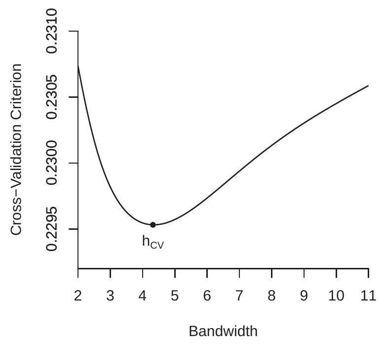
- Cross-Validation Criterion
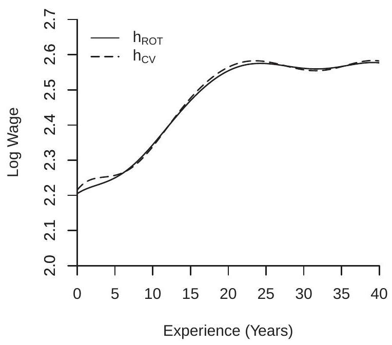
- Local Linear Regression
Figure 19.5: Log Wage Regression on Experience
18.20 Clustered Observations
Clustered observations are \(\left(Y_{i g}, X_{i g}\right)\) for individuals \(i=1, \ldots, n_{g}\) in cluster \(g=1, \ldots, G\). The model is
\[ \begin{aligned} Y_{i g} &=m\left(X_{i g}\right)+e_{i g} \\ \mathbb{E}\left[e_{i g} \mid \boldsymbol{X}_{g}\right] &=0 \end{aligned} \]
where \(\boldsymbol{X}_{g}\) is the stacked \(X_{i g}\). The assumption is that the clusters are mutually independent. Dependence within each cluster is unstructured.
Write
\[ Z_{i g}(x)=\left(\begin{array}{c} 1 \\ X_{i g}-x \end{array}\right) . \]
Stack \(Y_{i g}, e_{i g}\) and \(Z_{i g}(x)\) into cluster-level variables \(\boldsymbol{Y}_{g}, \boldsymbol{e}_{g}\) and \(Z_{g}(x)\). Let \(\boldsymbol{K}_{g}(x)=\operatorname{diag}\left\{K\left(\frac{X_{i g}-x}{h}\right)\right\}\). The local linear estimator can be written as
\[ \begin{aligned} \widehat{\beta}(x) &=\left(\sum_{g=1}^{G} \sum_{i=1}^{n_{g}} K\left(\frac{X_{i g}-x}{h}\right) Z_{i g}(x) Z_{i g}(x)^{\prime}\right)^{-1}\left(\sum_{g=1}^{G} \sum_{i=1}^{n_{g}} K\left(\frac{X_{i g}-x}{h}\right) Z_{i g}(x) Y_{i g}\right) \\ &=\left(\sum_{g=1}^{G} \boldsymbol{Z}_{g}(x)^{\prime} \boldsymbol{K}_{g}(x) \boldsymbol{Z}_{g}(x)\right)^{-1}\left(\sum_{g=1}^{G} \boldsymbol{Z}_{g}(x)^{\prime} \boldsymbol{K}_{g}(x) \boldsymbol{Y}_{g}\right) . \end{aligned} \]
The local linear estimator \(\widehat{m}(x)=\widehat{\beta}_{1}(x)\) is the intercept in (19.21).
The natural method to obtain prediction errors is by delete-cluster regression. The delete-cluster estimator of \(\beta\) is
\[ \widetilde{\beta}_{(-g)}(x)=\left(\sum_{j \neq g} \boldsymbol{Z}_{j}(x)^{\prime} \boldsymbol{K}_{j}(x) \boldsymbol{Z}_{j}(x)\right)^{-1}\left(\sum_{j \neq g} \boldsymbol{Z}_{j}(x)^{\prime} \boldsymbol{K}_{j}(x) \boldsymbol{Y}_{j}\right) . \]
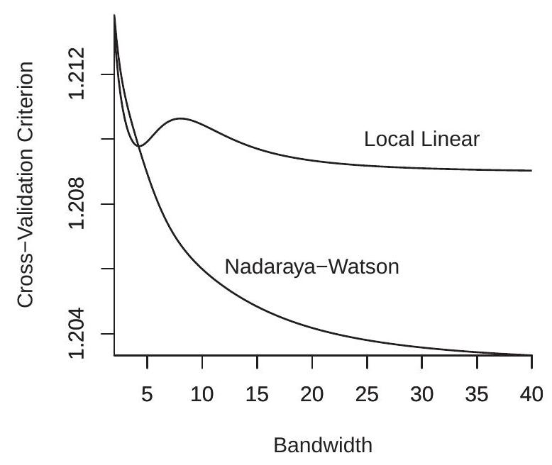
- Cross-Validation for Conditional Variance
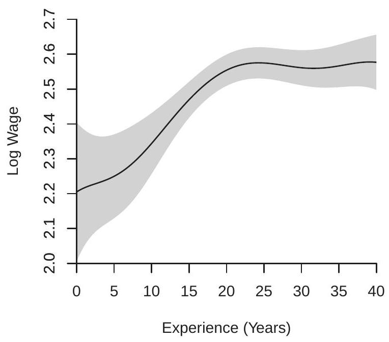
- Regression with Confidence Bands
Figure 19.6: Confidence Band Construction
The delete-cluster estimator of \(m(x)\) is the intercept \(\widetilde{m}_{1}(x)=\widetilde{\beta}_{1(-g)}(x)\) from (19.22). The delete-cluster prediction error for observation \(i g\) is
\[ \widetilde{e}_{i g}=Y_{i g}-\widetilde{\beta}_{1(-g)}\left(X_{i g}\right) . \]
Let \(\widetilde{\boldsymbol{e}}_{g}\) be the stacked \(\widetilde{e}_{i g}\) for cluster \(g\).
The variance of (19.21), conditional on the regressors \(\boldsymbol{X}\), is
\[ \boldsymbol{V}_{\widehat{\beta}}(x)=\left(\sum_{g=1}^{G} \boldsymbol{Z}_{g}(x)^{\prime} \boldsymbol{K}_{g}(x) \boldsymbol{Z}_{g}(x)\right)^{-1}\left(\sum_{g=1}^{G} \boldsymbol{Z}_{g}(x)^{\prime} \boldsymbol{K}_{g}(x) \boldsymbol{S}_{g}(x) \boldsymbol{K}_{g}(x) \boldsymbol{Z}_{g}(x)\right)\left(\sum_{g=1}^{G} \boldsymbol{Z}_{g}(x)^{\prime} \boldsymbol{K}_{g}(x) \boldsymbol{Z}_{g}(x)\right)^{-1} \]
where \(\boldsymbol{S}_{g}=\mathbb{E}\left[\boldsymbol{e}_{g} \boldsymbol{e}_{g}^{\prime} \mid \boldsymbol{X}_{g}\right]\). The covariance matrix (19.24) can be estimated by replacing \(\boldsymbol{S}_{g}\) with an estimator of \(\boldsymbol{e}_{g} \boldsymbol{e}_{g}^{\prime}\). Based on analogy with regression estimation we suggest the delete-cluster prediction errors \(\widetilde{\boldsymbol{e}}_{g}\) as they are not subject to over-fitting. This covariance matrix estimator using this choice is
\[ \widehat{\boldsymbol{V}}_{\widehat{\beta}}(x)=\left(\sum_{g=1}^{G} \boldsymbol{Z}_{g}(x)^{\prime} \boldsymbol{K}_{g}(x) \boldsymbol{Z}_{g}(x)\right)^{-1}\left(\sum_{g=1}^{G} Z_{g}(x) \boldsymbol{K}_{g}(x) \widetilde{\boldsymbol{e}}_{g} \widetilde{\boldsymbol{e}}_{g}^{\prime} \boldsymbol{K}_{g}(x) \boldsymbol{Z}_{g}(x)\right)\left(\sum_{g=1}^{G} \boldsymbol{Z}_{g}(x) \boldsymbol{K}_{g}(x) \boldsymbol{Z}_{g}(x)\right)^{-1} . \]
The standard error for \(\widehat{m}(x)\) is the square root of the first diagonal element of \(\widehat{\boldsymbol{V}}_{\widehat{\beta}}(x)\).
There is no current theory on how to select the bandwidth \(h\) for nonparametric regression using clustered observations. The Fan-Ghybels ROT bandwidth \(h_{\text {rot }}\) is designed for independent observations so is likely to be a crude choice in the case of clustered observations. Standard cross-validation has similar limitations. A practical alternative is to select the bandwidth \(h\) to minimize a delete-cluster crossvaliation criterion. While there is no formal theory to justify this choice, it seems like a reasonable option. The delete-cluster CV criterion is
\[ \mathrm{CV}(h)=\frac{1}{n} \sum_{g=1}^{G} \sum_{i=1}^{n_{g}} \widetilde{e}_{i g}^{2} \]
where \(\widetilde{e}_{i g}\) are the delete-cluster prediction errors (19.23). The delete-cluster CV bandwidth is the value which minimizes this function:
\[ h_{\mathrm{cV}}=\underset{h \geq h_{\ell}}{\operatorname{argmin}} \mathrm{CV}(h) . \]
As for the case of conventional cross-validation, it may be valuable to plot \(\mathrm{CV}(h)\) against \(h\) to verify that the minimum has been obtained and to assess sensitivity.
18.21 Application to Testscores
We illustrate kernel regression with clustered observations by using the Duflo, Dupas, and Kremer (2011) investigation of the effect of student tracking on testscores. Recall that the core question was effect of the dummy variable tracking on the continuous variable testscore. A set of controls were included including a continuous variable percentile which recorded the student’s initial test score (as a percentile). We investigate the authors’ specification of this control using local linear regression.
We took the subsample of 1487 girls who experienced tracking and estimated the regression of testscores on percentile. For this application we used unstandardized \({ }^{7}\) test scores which range from 0 to about 40 . We used local linear regression with a Gaussian kernel.
First consider bandwidth selection. The Fan-Ghybels ROT and conventional cross-validation bandwidths are \(h_{\mathrm{rot}}=6.7\) and \(h_{\mathrm{cv}}=12.3\). We then calculated the clustered cross-validation criterion which has minimizer \(h_{\mathrm{cv}}=6.2\). To understand the differences we plot the standard and clustered cross-validation functions in Figure 19.7(a). In order to plot on the same graph we normalize each by subtracting their minimized value (so each is minimized at zero). What we can see from Figure 19.7(a) is that while the conventional CV criterion is sharply minimized at \(h=12.3\), the clustered CV criterion is essentially flat between 5 and 11. This means that the clustered CV criterion has difficulty discriminating between these bandwidth choices.
Using the bandwidth selected by clustered cross-validation, we calculate the local linear estimator \(\hat{m}_{\mathrm{LL}}(x)\) of the regression function. The estimate is plotted in Figure 19.7(b). We calculate the deletecluster prediction errors \(\widetilde{\boldsymbol{e}}_{g}\) and use these to calculate the standard errors for the local linear estimator \(\widehat{m}_{\mathrm{LL}}(x)\) using formula (19.25). (These standard errors are roughly twice as large as those calculated using the non-clustered formula.) We use the standard errors to calculate \(95 %\) asymptotic pointwise confidence bands as in (19.20). These are plotted in Figure 19.7(b) along with the point estimate. Also plotted for comparison is an estimated linear regression line. The local linear estimator is similar to the global linear regression for initial percentiles below \(80 %\). But for initial percentiles above \(80 %\) the two lines diverge. The confidence bands suggest that these differences are statistically meaningful. Students with initial testscores at the top of the initial distribution have higher final testscores on average than predicted by a linear specification.
18.22 Multiple Regressors
Our analysis has focused on the case of real-valued \(X\) for simplicity, but the methods of kernel regression extend to the multiple regressor case at the cost of a reduced rate of convergence. In this section we
\({ }^{7}\) In Section 4.21, following Duflo, Dupas and Kremer (2011) the dependent variable was standardized testscores (normalized to have mean zero and variance one).
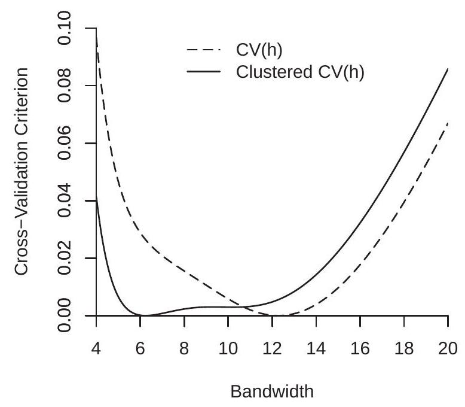
- Cross-Validation Criterion
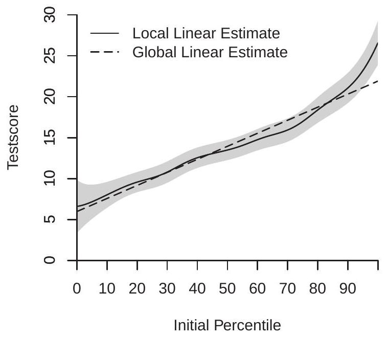
- Local Linear Regression
Figure 19.7: Testscore as a Function of Initial Percentile
consider the case of estimation of the conditional expectation function \(\mathbb{E}[Y \mid X=x]=m(x)\) where
\[ X=\left(\begin{array}{c} X_{1} \\ \vdots \\ X_{d} \end{array}\right) \in \mathbb{R}^{d} . \]
For any evaluation point \(x\) and observation \(i\) define the kernel weights
\[ K_{i}(x)=K\left(\frac{X_{1 i}-x_{1}}{h_{1}}\right) K\left(\frac{X_{2 i}-x_{2}}{h_{2}}\right) \cdots K\left(\frac{X_{d i}-x_{d}}{h_{d}}\right), \]
a \(d\)-fold product kernel. The kernel weights \(K_{i}(x)\) assess if the regressor vector \(X_{i}\) is close to the evaluation point \(x\) in the Euclidean space \(\mathbb{R}^{d}\).
These weights depend on a set of \(d\) bandwidths, \(h_{j}\), one for each regressor. Given these weights, the Nadaraya-Watson estimator takes the form
\[ \widehat{m}(x)=\frac{\sum_{i=1}^{n} K_{i}(x) Y_{i}}{\sum_{i=1}^{n} K_{i}(x)} . \]
For the local-linear estimator, define
\[ Z_{i}(x)=\left(\begin{array}{c} 1 \\ X_{i}-x \end{array}\right) \]
and then the local-linear estimator can be written as \(\widehat{m}(x)=\widehat{\alpha}(x)\) where
\[ \begin{aligned} \left(\begin{array}{c} \widehat{\alpha}(x) \\ \widehat{\beta}(x) \end{array}\right) &=\left(\sum_{i=1}^{n} K_{i}(x) Z_{i}(x) Z_{i}(x)^{\prime}\right)^{-1} \sum_{i=1}^{n} K_{i}(x) Z_{i}(x) Y_{i} \\ &=\left(\boldsymbol{Z}^{\prime} \boldsymbol{K} \boldsymbol{Z}\right)^{-1} \boldsymbol{Z}^{\prime} \boldsymbol{K} \boldsymbol{Y} \end{aligned} \]
where \(K=\operatorname{diag}\left\{K_{1}(x), \ldots, K_{n}(x)\right\}\).
In multiple regressor kernel regression cross-validation remains a recommended method for bandwidth selection. The leave-one-out residuals \(\widetilde{e}_{i}\) and cross-validation criterion \(\mathrm{CV}\left(h_{1}, \ldots, h_{d}\right)\) are defined identically as in the single regressor case. The only difference is that now the CV criterion is a function over the \(d\) bandwidths \(h_{1}, \ldots, h_{d}\). This means that numerical minimization needs to be done more efficiently than by a simple grid search.
The asymptotic distribution of the estimators in the multiple regressor case is an extension of the single regressor case. Let \(f(x)\) denote the marginal density of \(X, \sigma^{2}(x)=\mathbb{E}\left[e^{2} \mid X=x\right]\) denote the conditional variance of \(e=Y-m(X)\), and set \(|h|=h_{1} h_{2} \cdots h_{d}\).
Proposition 19.1 Let \(\hat{m}(x)\) denote either the Nadarya-Watson or Local Linear estimator of \(m(x)\). As \(n \rightarrow \infty\) and \(h_{j} \rightarrow 0\) such that \(n|h| \rightarrow \infty\),
\[ \sqrt{n|h|}\left(\widehat{m}(x)-m(x)-\sum_{j=1}^{d} h_{j}^{2} B_{j}(x)\right) \underset{d}{\longrightarrow} \mathrm{N}\left(0, \frac{R_{K}^{d} \sigma^{2}(x)}{f(x)}\right) . \]
For the Nadaraya-Watson estimator
\[ B_{j}(x)=\frac{1}{2} \frac{\partial^{2}}{\partial x_{j}^{2}} m(x)+f(x)^{-1} \frac{\partial}{\partial x_{j}} f(x) \frac{\partial}{\partial x_{j}} m(x) \]
and for the Local Linear estimator
\[ B_{j}(x)=\frac{1}{2} \frac{\partial^{2}}{\partial x_{j}^{2}} m(x) . \]
We do not provide regularity conditions or a formal proof but instead refer interested readers to Fan and Gijbels (1996).
18.23 Curse of Dimensionality
The term “curse of dimensionality” is used to describe the phenomenon that the convergence rate of nonparametric estimators slows as the dimension increases.
When \(X\) is vector-valued we define the AIMSE as the integral of the squared bias plus variance, integrating with respect to \(f(x) w(x)\) where \(w(x)\) is an integrable weight function. For notational simplicity consider the case that there is a single common bandwidth \(h\). In this case the AIMSE of \(\widehat{m}(x)\) equals
\[ \text { AIMSE }=h^{4} \int_{S}\left(\sum_{j=1}^{d} B_{j}(x)\right)^{2} f(x) w(x) d x+\frac{R_{K}^{d}}{n h^{d}} \int_{S} \sigma^{2}(x) w(x) d x \]
We see that the squared bias is of order \(h^{4}\), the same as in the single regressor case. The variance, however, is of larger order \(\left(n h^{d}\right)^{-1}\).
If pick the bandwith to minimizing the AIMSE we find that it equals \(h=\mathrm{cn}^{-1 /(4+d)}\) for some constant c. This generalizes the formula for the one-dimensional case. The rate \(n^{-1 /(4+d)}\) is slower than the \(n^{-1 / 5}\) rate. This effectively means that with multiple regressors a larger bandwidth is required. When the bandwidth is set as \(h=c n^{-1 /(4+d)}\) then the AIMSE is of order \(O\left(n^{-4 /(4+d)}\right)\). This is a slower rate of convergence than in the one-dimensional case.
Theorem 19.11 For vector-valued \(X\) the bandwidth which minimizes the AIMSE is of order \(h \sim n^{-1 /(4+d)}\). With \(h \sim n^{-1 /(4+d)}\) then AIMSE \(=O\left(n^{-4 /(4+d)}\right)\).
See Exercise 19.6.
We see that the optimal AIMSE rate \(O\left(n^{-4 /(4+d)}\right)\) depends on the dimension \(d\). As \(d\) increases this rate slows. Thus the precision of kernel regression estimators worsens with multiple regressors. The reason is the estimator \(\widehat{m}(x)\) is a local average of \(Y\) for observations such that \(X\) is close to \(x\), and when there are multiple regressors the number of such observations is inherently smaller.
This phenomenon - that the rate of convergence of nonparametric estimation decreases as the dimension increases - is called the curse of dimensionality. It is common across most nonparametric estimation problems and is not specific to kernel regression.
The curse of dimensionality has led to the practical rule that most applications of nonparametric regression have a single regressor. Some have two regressors; on occassion, three. More is uncommon.
18.24 Partially Linear Regression
To handle discrete regressors and/or reduce the dimensionality we can separate the regression function into a nonparametric and a parametric part. Let the regressors be partitioned as \((X, Z)\) where \(X\) and \(Z\) are \(d\) - and \(k\)-dimensional, respectively. A partially linear regression model is
\[ \begin{aligned} Y &=m(X)+Z^{\prime} \beta+e \\ \mathbb{E}[e \mid X, Z] &=0 . \end{aligned} \]
This model combines two elements. One, it specifies that the CEF is separable between \(X\) and \(Z\) (there are no nonparametric interactions). Two, it specifies that the CEF is linear in the regressors \(Z\). These are assumptions which may be true or may be false. In practice it is best to think of the assumptions as approximations.
When some regressors are discrete (as is common in econometric applications) they belong in \(Z\). The regressors \(X\) must be continuously distributed. In typical applications \(X\) is either scalar or twodimensional. This may not be a restriction in practice as many econometric applications only have a small number of continuously distributed regressors.
The seminal contribution for estimation of (19.26) is Robinson (1988) who proposed a nonparmametric version of residual regression. His key insight was to see that the nonparametric component can be eliminated by transformation. Take the expectation of equation (19.26) conditional on \(X\). This is
\[ \mathbb{E}[Y \mid X]=m(X)+\mathbb{E}[Z \mid X]^{\prime} \beta . \]
Subtract this from (19.26), obtaining
\[ Y-\mathbb{E}[Y \mid X]=(Z-\mathbb{E}[Z \mid X])^{\prime} \beta+e . \]
The model is now a linear regression of the nonparametric regression error \(Y-\mathbb{E}[Y \mid X]\) on the vector of nonparametric regression errors \(Z-\mathbb{E}[Z \mid X]\).
Robinson’s estimator replaces the infeasible regression errors by nonparametric counterparts. The result is a three-step estimator. 1. Using nonparametric regression (NW or LL), regress \(Y_{i}\) on \(X_{i}, Z_{1 i}\) on \(X_{i}, Z_{2 i}\) on \(X_{i}, \ldots\), and \(Z_{k i}\) on \(X_{i}\), obtaining the fitted values \(\widehat{g}_{0 i}, \widehat{g}_{1 i}, \ldots\), and \(\widehat{g}_{k i}\).
1. Regress \(Y_{i}-\widehat{g}_{0 i}\) on \(Z_{1 i}-\widehat{g}_{1 i}, \ldots, Z_{k i}-\widehat{g}_{k i}\) to obtain the coefficient estimate \(\widehat{\beta}\) and standard errors.
- Use nonparametric regression to regress \(Y_{i}-Z_{i}^{\prime} \widehat{\beta}\) on \(X_{i}\) to obtain the nonparametric estimator \(\widehat{m}(x)\) and confidence intervals.
The resulting estimators and standard errors have conventional asymptotic distributions under specific assumptions on the bandwidths. A full proof is provided by Robinson (1988). Andrews (2004) provides a more general treatment with insight to the general structure of semiparametric estimators.
The most difficult challenge is to show that the asymptotic distribution \(\widehat{\beta}\) is unaffected by the first step estimation. Briefly, these are the steps of the argument. First, the first-step error \(Z-\mathbb{E}[Z \mid X]\) has zero covariance with the regression error \(e\). Second, the asymptotic distribution will be unaffected by the firststep estimation if replacing (in this covariance) the expectation \(\mathbb{E}[Z \mid X]\) with its first-step nonparametric estimator induces an error of order \(o_{p}\left(n^{-1 / 2}\right)\). Third, because the covariance is a product, this holds when the first-step estimator has a convergence rate of \(o_{p}\left(n^{-1 / 4}\right)\). Fourth, this holds under Theorem \(19.11\) if \(h \sim n^{-1 /(4+d)}\) and \(d<4\).
The reason why the third step estimator has a conventional asymptotic distribution is a bit simpler to explain. The estimator \(\widehat{\beta}\) converges at a conventional \(O_{p}\left(n^{-1 / 2}\right)\) rate. The nonparametric estimator \(\widehat{m}(x)\) converges at a rate slower than \(O_{p}\left(n^{-1 / 2}\right)\). Thus the sampling error for \(\widehat{\beta}\) is of lower order and does not affect the first-order asymptotic distribution of \(\widehat{m}(x)\).
Once again, the theory is advanced so the above two paragraphs should not be taken as an explanation. The good news is that the estimation method is straightforward.
18.25 Computation
Stata has two commands which implement kernel regression: lpoly and npregress. 1poly implements local polynomial estimation for any \(p\), including Nadaraya-Watson (the default) and local linear estimation, and selects the bandwidth using the Fan-Gijbels ROT method. It uses the Epanechnikov kernel by default but the Gaussian can be selected as an option. The l poly command automatically displays the estimated CEF along with 95% confidence bands with standard errors computed using (19.18).
The Stata command npregress estimates local linear (the default) or Nadaraya-Watson regression. By default it selects the bandwidth by cross-validation. It uses the Epanechnikov kernel by default but the Gaussian can be selected as an option. Confidence intervals may be calculated using the percentile bootstrap. A display of the estimated CEF and 95% confidence bands at specific points (computed using the percentile bootstrap) may be obtained with the postestimation command margins.
There are several R packages which implement kernel regression. One flexible choice is npreg available in the np package. Its default method is Nadaraya-Watson estimation using a Gaussian kernel with bandwidth selected by cross-validation. There are options which allow local linear and local polynomial estimation, alternative kernels, and alternative bandwidth selection methods.
18.26 Technical Proofs*
For all technical proofs we make the simplifying assumption that the kernel function \(K(u)\) has bounded support, thus \(K(u)=0\) for \(|u|>a\). The results extend to the Gaussian kernel but with addition technical arguments. Proof of Theorem 19.1.1. Equation (19.3) shows that
\[ \mathbb{E}\left[\widehat{m}_{\mathrm{nW}}(x) \mid \boldsymbol{X}\right]=m(x)+\frac{\widehat{b}(x)}{\widehat{f}(x)} \]
where \(\widehat{f}(x)\) is the kernel density estimator (19.19) of \(f(x)\) with \(b=h\) and
\[ \widehat{b}(x)=\frac{1}{n h} \sum_{i=1}^{n} K\left(\frac{X_{i}-x}{h}\right)\left(m\left(x_{i}\right)-m(x)\right) . \]
Theorem \(17.6\) of Probability and Statistics for Economists established that \(\widehat{f}(x) \underset{p}{\longrightarrow} f(x)\). The proof is completed by showing that \(\widehat{b}(x)=h^{2} f(x) B_{\mathrm{nw}}(x)+o_{p}\left(h^{2}+1 / \sqrt{n h}\right)\).
Since \(\widehat{b}(x)\) is a sample average it has the expectation
\[ \begin{aligned} \mathbb{E}[\widehat{b}(x)] &=\frac{1}{h} \mathbb{E}\left[K\left(\frac{X-x}{h}\right)(m(X)-m(x))\right] \\ &=\int_{-\infty}^{\infty} \frac{1}{h} K\left(\frac{v-x}{h}\right)(m(v)-m(x)) f(v) d v \\ &=\int_{-\infty}^{\infty} K(u)(m(x+h u)-m(x)) f(x+h u) d u . \end{aligned} \]
The second equality writes the expectation as an integral with respect to the density of \(X\). The third uses the change-of-variables \(v=x+h u\). We next use the two Taylor series expansions
\[ \begin{gathered} m(x+h u)-m(x)=m^{\prime}(x) h u+\frac{1}{2} m^{\prime \prime}(x) h^{2} u^{2}+o\left(h^{2}\right) \\ f(x+h u)=f(x)+f^{\prime}(x) h u+o(h) \end{gathered} \]
Inserted into (19.29) we find that (19.29) equals
\[ \begin{aligned} &\int_{-\infty}^{\infty} K(u)\left(m^{\prime}(x) h u+\frac{1}{2} m^{\prime \prime}(x) h^{2} u^{2}+o\left(h^{2}\right)\right)\left(f(x)+f^{\prime}(x) h u+o(h)\right) d u \\ &=h\left(\int_{-\infty}^{\infty} u K(u) d u\right) m^{\prime}(x)(f(x)+o(h)) \\ &+h^{2}\left(\int_{-\infty}^{\infty} u^{2} K(u) d u\right)\left(\frac{1}{2} m^{\prime \prime}(x) f(x)+m^{\prime}(x) f^{\prime}(x)\right) \\ &+h^{3}\left(\int_{-\infty}^{\infty} u^{3} K(u) d u\right) \frac{1}{2} m^{\prime \prime}(x) f^{\prime}(x)+o\left(h^{2}\right) \\ &=h^{2}\left(\frac{1}{2} m^{\prime \prime}(x) f(x)+m^{\prime}(x) f^{\prime}(x)\right)+o\left(h^{2}\right) \\ &=h^{2} B_{\mathrm{nw}}(x) f(x)+o\left(h^{2}\right) . \end{aligned} \]
The second equality uses the fact that the kernel \(K(x)\) integrates to one, its odd moments are zero, and the kernel variance is one. We have shown that \(\mathbb{E}[\widehat{b}(x)]=B_{\mathrm{nw}}(x) f(x) h^{2}+o\left(h^{2}\right)\).
Now consider the variance of \(\widehat{b}(x)\). Since \(\widehat{b}(x)\) is a sample average of independent components and the variance is smaller than the second moment
\[ \begin{aligned} \operatorname{var}[\widehat{b}(x)] &=\frac{1}{n h^{2}} \operatorname{var}\left[K\left(\frac{X-x}{h}\right)(m(X)-m(x))\right] \\ & \leq \frac{1}{n h^{2}} \mathbb{E}\left[K\left(\frac{X-x}{h}\right)^{2}(m(X)-m(x))^{2}\right] \\ &=\frac{1}{n h} \int_{-\infty}^{\infty} K(u)^{2}(m(x+h u)-m(x))^{2} f(x+h u) d u \\ &=\frac{1}{n h} \int_{-\infty}^{\infty} u^{2} K(u)^{2} d u\left(m^{\prime}(x)\right)^{2} f(x)\left(h^{2}+o(1)\right) \\ & \leq \frac{h}{n} \bar{K}\left(m^{\prime}(x)\right)^{2} f(x)+o\left(\frac{h}{n}\right) \end{aligned} \]
The second equality writes the expectation as an integral. The third uses (19.30). The final inequality uses \(K(u) \leq \bar{K}\) from Definition 19.1.1 and the fact that the kernel variance is one. This shows that
\[ \operatorname{var}[\widehat{b}(x)] \leq O\left(\frac{h}{n}\right) . \]
Together we conclude that
\[ \widehat{b}(x)=h^{2} f(x) B_{\mathrm{nw}}(x)+o\left(h^{2}\right)+O_{p}\left(\sqrt{\frac{h}{n}}\right) \]
and
\[ \frac{\widehat{b}(x)}{\widehat{f}(x)}=h^{2} B_{\mathrm{nw}}(x)+o_{p}\left(h^{2}\right)+O_{p}\left(\sqrt{\frac{h}{n}}\right) . \]
Together with (19.27) this implies Theorem 19.1.1.
Proof of Theorem 19.2.1. Equation (19.4) states that
\[ n h \operatorname{var}\left[\widehat{m}_{\mathrm{nw}}(x) \mid \boldsymbol{X}\right]=\frac{\widehat{v}(x)}{\widehat{f}(x)^{2}} \]
where
\[ \widehat{v}(x)=\frac{1}{n h} \sum_{i=1}^{n} K\left(\frac{X_{i}-x}{h}\right)^{2} \sigma^{2}\left(X_{i}\right) \]
and \(\widehat{f}(x)\) is the estimator (19.19) of \(f(x)\). Theorem \(17.6\) of Probability and Statistics for Economists established \(\widehat{f}(x) \underset{p}{\longrightarrow} f(x)\). The proof is completed by showing \(\widehat{v}(x) \underset{p}{\rightarrow} R_{K} \sigma^{2}(x) f(x)\).
First, writing the expectation as an integral with respect to \(f(x)\), making the change-of-variables \(v=x+h u\), and appealing to the continuity of \(\sigma^{2}(x)\) and \(f(x)\) at \(x\),
\[ \begin{aligned} \mathbb{E}[\widehat{v}(x)] &=\int_{-\infty}^{\infty} \frac{1}{h} K\left(\frac{v-x}{h}\right)^{2} \sigma^{2}(v) f(v) d v \\ &=\int_{-\infty}^{\infty} K(u)^{2} \sigma^{2}(x+h u) f(x+h u) d u \\ &=\int_{-\infty}^{\infty} K(u)^{2} \sigma^{2}(x) f(x)+o(1) \\ &=R_{K} \sigma^{2}(x) f(x) . \end{aligned} \]
Second, because \(\widehat{v}(x)\) is an average of independent random variables and the variance is smaller than the second moment
\[ \begin{aligned} n h \operatorname{var}[\widehat{v}(x)] &=\frac{1}{h} \operatorname{var}\left[K\left(\frac{X-x}{h}\right)^{2} \sigma^{2}(X)\right] \\ & \leq \frac{1}{h} \int_{-\infty}^{\infty} K\left(\frac{v-x}{h}\right)^{4} \sigma^{4}(v) f(v) d v \\ &=\int_{-\infty}^{\infty} K(u)^{4} \sigma^{4}(x+h u) f(x+h u) d u \\ & \leq \bar{K}^{2} R_{k} \sigma^{4}(x) f(x)+o(1) \end{aligned} \]
so \(\operatorname{var}[\widehat{v}(x)] \rightarrow 0\).
We deduce from Markov’s inequality that \(\widehat{v}(x) \underset{p}{\longrightarrow} R_{K} \sigma^{2}(x) f(x)\), completing the proof.
Proof of Theorem 19.7. Observe that \(m\left(X_{i}\right)-\tilde{m}_{-i}\left(X_{i}, h\right)\) is a function only of \(\left(X_{1}, \ldots, X_{n}\right)\) and \(\left(e_{1}, \ldots, e_{n}\right)\) excluding \(e_{i}\), and is thus uncorrelated with \(e_{i}\). Since \(\widetilde{e}_{i}(h)=m\left(X_{i}\right)-\widetilde{m}_{-i}\left(X_{i}, h\right)+e_{i}\), then
\[ \begin{aligned} \mathbb{E}[\mathrm{CV}(h)] &=\mathbb{E}\left(\widetilde{e}_{i}(h)^{2} w\left(X_{i}\right)\right) \\ &=\mathbb{E}\left[e_{i}^{2} w\left(X_{i}\right)\right]+\mathbb{E}\left[\left(\widetilde{m}_{-i}\left(X_{i}, h\right)-m\left(X_{i}\right)\right)^{2} w\left(X_{i}\right)\right] \\ &+2 \mathbb{E}\left[\left(\widetilde{m}_{-i}\left(X_{i}, h\right)-m\left(X_{i}\right)\right) w\left(X_{i}\right) e_{i}\right] \\ &=\bar{\sigma}^{2}+\mathbb{E}\left[\left(\widetilde{m}_{-i}\left(X_{i}, h\right)-m\left(X_{i}\right)\right)^{2} w\left(X_{i}\right)\right] . \end{aligned} \]
The second term is an expectation over the random variables \(X_{i}\) and \(\widetilde{m}_{-i}(x, h)\), which are independent as the second is not a function of the \(i^{t h}\) observation. Thus taking the conditional expectation given the sample excluding the \(i^{t h}\) observation, this is the expectation over \(X_{i}\) only, which is the integral with respect to its density
\[ \mathbb{E}_{-i}\left[\left(\widetilde{m}_{-i}\left(X_{i}, h\right)-m\left(X_{i}\right)\right)^{2} w\left(X_{i}\right)\right]=\int\left(\widetilde{m}_{-i}(x, h)-m(x)\right)^{2} f(x) w(x) d x . \]
Taking the unconditional expecation yields
\[ \begin{aligned} \mathbb{E}\left[\left(\widetilde{m}_{-i}\left(X_{i}, h\right)-m\left(X_{i}\right)\right)^{2} w\left(X_{i}\right)\right] &=\mathbb{E}\left[\int\left(\widetilde{m}_{-i}(x, h)-m(x)\right)^{2} f(x) w(x) d x\right] \\ &=\operatorname{IMSE}_{n-1}(h) \end{aligned} \]
where this is the IMSE of a sample of size \(n-1\) as the estimator \(\widetilde{m}_{-i}\) uses \(n-1\) observations. Combined with (19.35) we obtain (19.12), as desired.
Proof of Theorem 19.8. We can write the Nadaraya-Watson estimator as
\[ \widehat{m}_{\mathrm{nw}}(x)=m(x)+\frac{\widehat{b}(x)}{\widehat{f}(x)}+\frac{\widehat{g}(x)}{\widehat{f}(x)} \]
where \(\widehat{f}(x)\) is the estimator (19.19), \(\widehat{b}(x)\) is defined in (19.28), and
\[ \widehat{g}(x)=\frac{1}{n h} \sum_{i=1}^{n} K\left(\frac{X_{i}-x}{h}\right) e_{i} . \]
Since \(\widehat{f}(x) \underset{p}{\longrightarrow} f(x)>0\) by Theorem \(17.6\) of Probability and Statistics for Economists, the proof is completed by showing \(\widehat{b}(x) \underset{p}{\longrightarrow} 0\) and \(\widehat{g}(x) \underset{p}{\longrightarrow} 0\). Take \(\widehat{b}(x)\). From (19.29) and the continuity of \(m(x)\) and \(f(x)\)
\[ \mathbb{E}[\widehat{b}(x)]=\int_{-\infty}^{\infty} K(u)(m(x+h u)-m(x)) f(x+h u) d u=o(1) \]
as \(h \rightarrow \infty\). From (19.33),
\[ n h \operatorname{var}[\widehat{b}(x)] \leq \int_{-\infty}^{\infty} K(u)^{2}(m(x+h u)-m(x))^{2} f(x+h u) d u=o(1) \]
as \(h \rightarrow \infty\). Thus \(\operatorname{var}[\widehat{b}(x)] \longrightarrow 0\). By Markov’s inequality we conclude \(\widehat{b}(x) \stackrel{p}{\longrightarrow} 0\).
Take \(\widehat{g}(x)\). Since \(\widehat{g}(x)\) is linear in \(e_{i}\) and \(\mathbb{E}[e \mid X]=0\), we find \(\mathbb{E}[\widehat{g}(x)]=0\). Since \(\widehat{g}(x)\) is an average of independent random variables, the variance is smaller than the second moment, and the definition \(\sigma^{2}(X)=\mathbb{E}\left[e^{2} \mid X\right]\)
\[ \begin{aligned} n h \operatorname{var}[\widehat{g}(x)] &=\frac{1}{h} \operatorname{var}\left[K\left(\frac{X-x}{h}\right) e\right] \\ & \leq \frac{1}{h} \mathbb{E}\left[K\left(\frac{X-x}{h}\right)^{2} e^{2}\right] \\ &=\frac{1}{h} \mathbb{E}\left[K\left(\frac{X-x}{h}\right)^{2} \sigma^{2}(X)\right] \\ &=\int_{-\infty}^{\infty} K(u)^{2} \sigma^{2}(x+h u) f(x+h u) d u \\ &=R_{K} \sigma^{2}(x) f(x)+o(1) \end{aligned} \]
because \(\sigma^{2}(x)\) and \(f(x)\) are continuous in \(x\). Thus \(\operatorname{var}[\widehat{g}(x)] \longrightarrow 0\). By Markov’s inequality we conclude \(\widehat{g}(x) \underset{p}{\longrightarrow} 0\), completing the proof.
Proof of Theorem 19.9. From (19.36), Theorem \(17.6\) of Probability and Statistics for Economists, and (19.34) we have
\[ \begin{aligned} \sqrt{n h}\left(\widehat{m}_{\mathrm{nw}}(x)-m(x)-h^{2} B_{\mathrm{nw}}(x)\right) &=\sqrt{n h}\left(\frac{\widehat{g}(x)}{\widehat{f}(x)}\right)+\sqrt{n h}\left(\frac{\widehat{b}(x)}{\widehat{f}(x)}-h^{2} B_{\mathrm{nw}}(x)\right) \\ &=\sqrt{n h}\left(\frac{\widehat{g}(x)}{f(x)}\right)\left(1+o_{p}(1)\right)+\sqrt{n h}\left(o_{p}\left(h^{2}\right)+O_{p}\left(\sqrt{\frac{h}{n}}\right)\right) \\ &=\sqrt{n h}\left(\frac{\widehat{g}(x)}{f(x)}\right)\left(1+o_{p}(1)\right)+\left(o_{p}\left(\sqrt{n h^{5}}\right)+O_{p}(h)\right) \\ &=\sqrt{n h}\left(\frac{\widehat{g}(x)}{f(x)}\right)+o_{p}(1) \end{aligned} \]
where the final equality holds because \(\sqrt{n h} \widehat{g}(x)=O_{p}(1)\) by (19.38) and the assumption \(n h^{5}=O(1)\). The proof is completed by showing \(\sqrt{n h} \widehat{g}(x) \underset{d}{\longrightarrow} \mathrm{N}\left(0, R_{K} \sigma^{2}(x) f(x)\right)\).
Define \(Y_{n i}=h^{-1 / 2} K\left(\frac{X_{i}-x}{h}\right) e_{i}\) which are independent and mean zero. We can write \(\sqrt{n h} \widehat{g}(x)=\sqrt{n} \bar{Y}\) as a standardized sample average. We verify the conditions for the Lindeberg CLT (Theorem 6.4). In the notation of Theorem 6.4, set \(\bar{\sigma}_{n}^{2}=\operatorname{var}[\sqrt{n} \bar{Y}] \rightarrow R_{K} f(x) \sigma^{2}(x)\) as \(h \rightarrow 0\). The CLT holds if we can verify the Lindeberg condition.
This is an advanced calculation and will not interest most readers. It is provided for those interested in a complete derivation. Fix \(\epsilon>0\) and \(\delta>0\). Since \(K(u)\) is bounded we can write \(K(u) \leq \bar{K}\). Let \(n h\) be sufficiently large so that
\[ \left(\frac{\epsilon n h}{\bar{K}^{2}}\right)^{(r-2) / 2} \geq \frac{\bar{\sigma}}{\delta} . \]
The conditional moment bound (19.14) implies that for \(x \in \mathscr{N}\),
\[ \begin{aligned} \mathbb{E}\left[e^{2} \mathbb{1}\left\{e^{2}>\frac{\epsilon n h}{\bar{K}^{2}}\right\} \mid X=x\right] &=\mathbb{E}\left[\frac{|e|^{r}}{|e|^{r-2}} \mathbb{1}\left\{e^{2}>\frac{\epsilon n h}{\bar{K}^{2}}\right\} \mid X=x\right] \\ & \leq \mathbb{E}\left[\frac{|e|^{r}}{\left(\epsilon n h / \bar{K}^{2}\right)^{(r-2) / 2}} \mid X=x\right] \\ & \leq \delta . \end{aligned} \]
Since \(Y_{n i}^{2} \leq h^{-1} \bar{K}^{2} e_{i}^{2}\) we find
\[ \begin{aligned} \mathbb{E}\left[Y_{n i}^{2} \mathbb{1}\left\{Y_{n i}^{2}>\epsilon n\right\}\right] & \leq \frac{1}{h} \mathbb{E}\left[K\left(\frac{X-x}{h}\right)^{2} e^{2} \mathbb{1}\left\{e^{2}>\frac{\epsilon n h}{\bar{K}^{2}}\right\}\right] \\ &=\frac{1}{h} \mathbb{E}\left[K\left(\frac{X-x}{h}\right)^{2} \mathbb{E}\left(e^{2} \mathbb{1}\left\{e^{2}>\frac{\epsilon n h}{\bar{K}^{2}}\right\} \mid X\right)\right] \\ &=\int_{-\infty}^{\infty} K(u)^{2} \mathbb{E}\left[e^{2} \mathbb{1}\left\{e^{2}>\epsilon n h / \bar{K}^{2}\right\} \mid X=x+h u\right] f(x+h u) d u \\ & \leq \delta \int_{-\infty}^{\infty} K(u)^{2} f(x+h u) d u \\ &=\delta R_{K} f(x)+o(1) \\ &=o(1) \end{aligned} \]
because \(\delta\) is arbitrary. This is the Lindeberg condition (6.2). The Lindeberg CLT (Theorem 6.4) shows that
\[ \sqrt{n h} \widehat{g}(x)=\sqrt{n} \bar{Y} \underset{d}{\longrightarrow} \mathrm{N}\left(0, R_{K} \sigma^{2}(x) f(x)\right) \]
This completes the proof.
18.27 Exercises
Exercise 19.1 For kernel regression suppose you rescale \(Y\), for example replace \(Y\) with \(100 Y\). How should the bandwidth \(h\) change? To answer this, first address how the functions \(m(x)\) and \(\sigma^{2}(x)\) change under rescaling, and then calculate how \(\bar{B}\) and \(\bar{\sigma}^{2}\) change. Deduce how the optimal \(h_{0}\) changes due to rescaling \(Y\). Does your answer make intuitive sense?
Exercise 19.2 Show that (19.6) minimizes the AIMSE (19.5).
Exercise 19.3 Describe in words how the bias of the local linear estimator changes over regions of convexity and concavity in \(m(x)\). Does this make intuitive sense?
Exercise 19.4 Suppose the true regression function is linear \(m(x)=\alpha+\beta x\) and we estimate the function using the Nadaraya-Watson estimator. Calculate the bias function \(B(x)\). Suppose \(\beta>0\). For which regions is \(B(x)>0\) and for which regions is \(B(x)<0\) ? Now suppose that \(\beta<0\) and re-answer the question. Can you intuitively explain why the NW estimator is positively and negatively biased for these regions? Exercise 19.5 Suppose \(m(x)=\alpha\) is a constant function. Find the AIMSE-optimal bandwith (19.6) for NW estimation? Explain.
Exercise 19.6 Prove Theorem 19.11: Show that when \(d \geq 1\) the AIMSE optimal bandwidth takes the form \(h_{0}=c n^{-1 /(4+d)}\) and AIMSE is \(O\left(n^{-4 /(4+d)}\right)\).
Exercise 19.7 Take the DDK2011 dataset and the subsample of boys who experienced tracking. As in Section \(19.21\) use the Local Linear estimator to estimate the regression of testscores on percentile but now with the subsample of boys. Plot with \(95 %\) confidence intervals. Comment on the similarities and differences with the estimate for the subsample of girls.
Exercise 19.8 Take the cps09mar dataset and the subsample of individuals with education=20 (professional degree or doctorate), with experience between 0 and 40 years.
Use Nadaraya-Watson to estimate the regression of log(wage) on experience, separately for men and women. Plot with \(95 %\) confidence intervals. Comment on how the estimated wage profiles vary with experience. In particular, do you think the evidence suggests that expected wages fall for experience levels above 20 for this education group?
Repeat using the Local Linear estimator. How do the estimates and confidence intervals change?
Exercise 19.9 Take the Invest1993 dataset and the subsample of observations with \(Q \leq 5\). (In the dataset \(Q\) is the variable vala.)
Use Nadaraya-Watson to estimate the regression of \(I\) on \(Q\). (In the dataset \(I\) is the variable inva.) Plot with \(95 %\) confidence intervals.
Repeat using the Local Linear estimator.
Is there evidence to suggest that the regression function is nonlinear?
Exercise 19.10 The RR2010 dataset is from Reinhart and Rogoff (2010). It contains observations on annual U.S. GDP growth rates, inflation rates, and the debt/gdp ratio for the long time span 1791-2009. The paper made the strong claim that gdp growth slows as debt/gdp increases and in particular that this relationship is nonlinear with debt negatively affecting growth for debt ratios exceeding \(90 %\). Their full dataset includes 44 countries. Our extract only includes the United States.
Use Nadaraya-Watson to estimate the regression of gdp growth on the debt ratio. Plot with 95% confidence intervals.
Repeat using the Local Linear estimator.
Do you see evidence of nonlinearity and/or a change in the relationship at \(90 %\) ?
Now estimate a regression of gdp growth on the inflation rate. Comment on what you find.
Exercise 19.11 We will consider a nonlinear AR(1) model for gdp growth rates
\[ \begin{aligned} &Y_{t}=m\left(Y_{t-1}\right)+e_{t} \\ &Y_{t}=100\left(\left(\frac{G D P_{t}}{G D P_{t-1}}\right)^{4}-1\right) \end{aligned} \]
Create GDP growth rates \(Y_{t}\). Extract the level of real U.S. GDP ( \(\left.g d p c 1\right)\) from FRED-QD and make the above transformation to growth rates.
Use Nadaraya-Watson to estimate \(m(x)\). Plot with 95% confidence intervals.
Repeat using the Local Linear estimator.
Do you see evidence of nonlinearity?